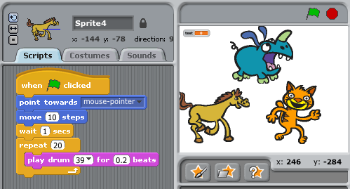
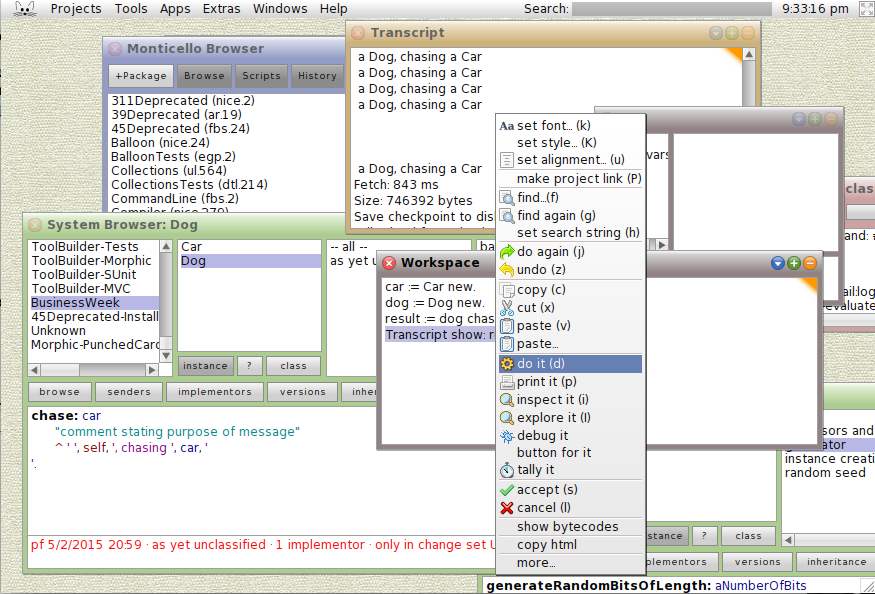
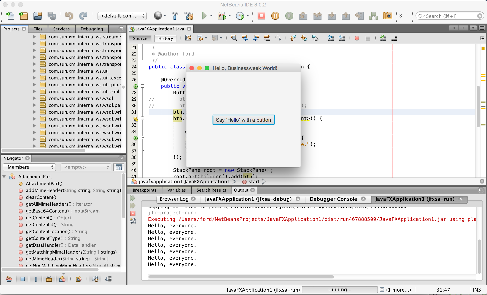
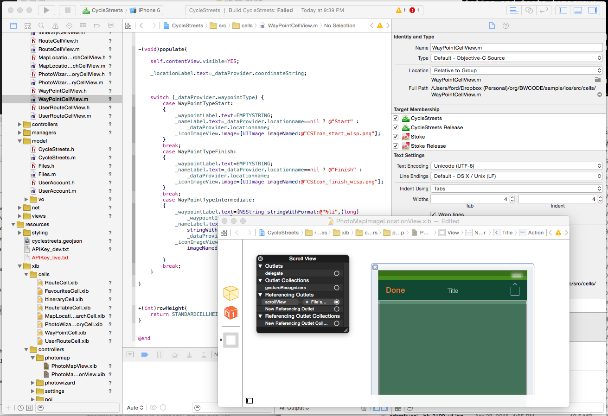
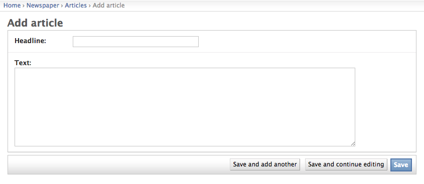

The man in the taupe blazer
You are an educated, successful person capable of abstract thought, with many years behind your career. On the other side of your (well-organized) desk sits this guy in his mid-30s with a computer in his lap. He has come to discuss spending huge sums to create intangible abstractions. You control his budget and should it all go pear-shaped, you worry, your career will end.
He says: “We’re basically at the limits with WordPress."1
Who wears a taupe blazer? The CTO was fired six months ago. He has (had?) three kids in college and a moustache. It was a bad exit. Replaced by someone who used to work at Adobe. The new person has very short hair and no moustache. The man in the taupe blazer works for the new CTO.
None of this is great.
Here is what you have been told. All of the computer code that currently exists, running the website, must be replaced. It has become a negative asset. Time marched on. A new person showed up in a key role and said it was without value. Your competitors have an animated shopping cart2 that is much more vibrant and, at checkout, drives across the top of the screen. Men and women from sales stomp around your office insisting you take action, sighing like theater students; they tell you that they’re embarassed every time they line up a new client, embarrassed to share your web address. Nothing works on mobile. Sales are being lost and something must be done. Which is why the man in the taupe blazer is talking–what is he, webmaster? IT? No, it’s “Scrum Master,” a real title on a real business card that he has probably never given out to anyone.3
“My people are split. Some want to use Drupal 74, which is PHP5.” He frowns. “But the other option is just doing the backend in Node.js6 with Backbone7 in front.” He eyes you sympathetically and explains. “With that option it’s all JavaScript.8” These are all terms you’ve heard. You’ve read the first parts of the Wikipedia pages9. They made sense then. So you ask the universal framing question: “Did you cost these?”
He did, of course. He gives you the number and the date. You know it’s probably half what it should be and will go a year over schedule. There are little treats in the budget: The $85 grand in Oracle licenses will no longer be needed; they’re moving to a free database. Somehow? They can’t cut Oracle off just yet, though. Too risky. Not for another 12 months (or well 18 would be better). You remind him that the contract doesn’t come up until May 2016 in any case. So no, actually. That cost remains. You’ll keep paying and paying it.
This man—he makes a third less than you do, and his education ended with a BS from some unknown school in the middle of an inessential state, but he has 500+ connections on LinkedIn. That plus sign after the 500 bothers you. How many more than 500 people does he know? Five? Five thousand? In some primitive and puzzling context, he outranks you. Not within the company, not in restaurant reservations, not around lawyers. Still: He strokes his short beard; his hands are tanned; he hikes; his socks are embroidered with ninjas.
“And also,” he says, “we’ve got to budget for apps.”
That is a real thing, a man in ninja-socks, who came into your office and said, “we’ve got to budget for apps.” Should it all go pear-shaped, his career will be just fine.
Is the author a good programmer?
The author of this essay is a middling programmer of limited mathematical instinct.
While I have always been technically inclined, coding intimidated me and I had no idea how to get started. I only learned to program in my 20s, learning via oraperl, a special version of the Perl language modified to work with the Oracle database. Soon after starting I seriously damaged the accounts of 30,000 fantasy basketball players, to their mass dismay. So: I’ve never been good but I’ve become better, amassing enough information that, after 18 years or so, the computer has partially revealed itself. Its magic has been stripped away, and I can talk to someone who used to work at Amazon or Microsoft about their work in detail and not feel a burning shame. (I’d happily talk to people from Google and Apple, too, but they rarely re-enter the general population.)
As I entered the workforce in 1996 the web was expanding at a tremendous rate. I am, mostly, a Web programmer. Meaning that I sometimes oversee websites and web services, and write code that displays inside of Web browsers.10
The Web is large but it’s not everything. One study11 says that in the world there are 11 million professional software developers, and another 7 million hobbyists. The same number of humans live in the greater Los Angeles metro area. So imagine all of greater Los Angeles, programming. The restaurants would be different. East Los Angeles would be for Mac programmers, West for mobile programmers, Beverley Hills for finance programmers, and all of Orange County for Windows programmers. There are lots of other neighborhoods, too: There are people who write code for embedded computers that are smaller than your thumb (the computers; the people are probably normal-sized), and people who write the code that runs your TV, and so forth. There are programmers for everything.
I’m one of 18 million. That’s a comfort. I specialize in big, boring problems involving lots of documents. Despite being weak at mathematics and easily overwhelmed, I still love the work. The computer lets you solve problems at an inhuman scale, something that could never be done without millions of workers. You can organize a million pages, search through a billion words, interact with thousands of people at once. Every month it becomes more easy to do things that have never been done before. The work takes focus. It’s fun, at first. Anxiety shows up closer to deadline.
Hitting a key
What is a computer?
A computer is a clock with benefits. They all work the same, doing second-grade math one step at a time: Tick, take a signal and put it in box one. Tick, take another signal, put it in box two. Tick, operate upon those two signals and put the result in box one (an operation might be addition, or subtraction). Tick, if the result is zero, go to box three and follow the instructions you find there. You, using a pen and paper, can do anything a computer can; you just can’t do those things billions of times per second.

Those billions of operations can make tiny changes in the world. They can cause a beep to boop, elevate an elevator, adjust steering, and change a missile’s course. Computer science (different from programming) is the mathematics of flipping switches in a hurry—three billion times a second, say. That speed makes it possible to pull off not just one but multiple sleights-of-hand: Card tricks on top of card tricks. Take a bunch of pulses of light reflected from an optical disc, apply some math to unsqueeze them, and copy the resulting pile of expanded impulses into some memory cells–then read from those cells to paint light on the screen. Millions of pulses, sixty times a second. That’s how you make the rubes believe they’re watching a movie.
That is one way of seeing the computer. Another way to see it is conceptually, as a commercial product that is produced by a massive industry. A computer is a mass-produced object made of many other objects. It connects to other mass-produced objects like monitors, keyboards, and the Internet. You load software onto a computer (or something does) and run that software, often by clicking a little picture two times.
Apple has always made computers; Microsoft didn’t used to make computers, just software12, but now it is in the business, from the Zune to the Surface Pro 3. Facebook assembles computers for its own use, in its massive data centers. Samsung makes computers that look like TVs, and Tesla makes computers that look like cars but are actually rolling web servers. Many things are computers, or will be. This includes your watch, camera, radio, phone, heating system, air conditioning system, cash register, toilet, toys, stereo (personal or otherwise), airplanes, and film projectors. Some things that are not yet computers include headphones, mugs, flashlights, and vacuum cleaners, but all of these will fall eventually.
Things that we think of as “documents” may also evolve into “software,” like your music files, word processing documents, and movies. Watching a film in iTunes or Windows Media Player might seem like a modernized, hyper-stylized version of starting up a VCR to play some magnetic tape, but the film itself is now software. We just haven’t figured out how to handle that yet.
When you repeat a process in Photoshop or sum numbers in Excel, you’re programming. When you use computers too much—which is to say, the normal amount—they start to get into you. I’ve had Photoshop dreams, Visio dreams, spreadsheet dreams, and web browser dreams, where information becomes fluid and can be sorted and restructured. I’ve also had programming dreams. The turn-of-last-century British artist William Morris once said, you can’t have art without resistance in the materials. The computer and its multifarious peripherals are the materials. The code is the art.
How do you type an “a”?
Consider what happens when you strike a key on your keyboard. Say a lowercase “a”. On any old keyboard connected via wires13.
Pressing the key completes a circuit—another light switch turned on. Each key has its own code: A “make” code when it’s pressed down; a “break” code when it’s lifted up. While you hold down the “A” key the keyboard sends a continual stream of “make” codes, for as long as your finger is pushing down. For the “a”, it’s understood as “1C.” These codes travel through the wires of the keyboard as electrical impulses. The computer reads and inteprets these impulses and hands them into main processor of the computer. “Here’s what the keyboard just received,” they say. “Do with it what you will.”
The computer is in a given state. If you type while the computer is off, nothing will happen. If you type while the computer is starting up, it may not have any effect. But once the operating system is loaded, and a word-processing application is open, the signal is passed into the operating system and routed to the currently active application.
Is the “a” now on the screen? Of course not; too easy. The machine has to pull the image of the “a” out of its memory—this version is an abstraction is made up of lines and circles—and draw it into the part of memory that manages the screen. So we have three representations of one letter: The signal from the keyboard; the version in the operating system; and the lines-and-circles version sketched on the screen.
The machine needs to mark in memory that this “a” was pressed. If you type an “a” in the middle of a paragraph then the computer can’t just treat that whole paragraph as a single clean line, but rather as a broken line. There are all manner of consequences—numerable consequences, because after all this is a computer—radiating out from that single keypress. Think about cutting-and-pasting. It’s amazing any of it works at all.
A programmer is many things. A programmer is a person who is willing to work backwards to the keypress. They have to track the progress of a signal passing through layers of abstraction; they need to understand how something goes from being a keypress to a printout.14
What is a computer architecture?
Most computers today run along principles first outlined in 1945, in the famous paper on the “von Neumann architecture,” named for Jon von Neumann’s paper, “First Draft of a Report on the EDVAC,” EDVAC being Electronic Discrete Variable Automatic Computer: One of those great hulking vaccuum-tube beasts that filled a room and weighed tons.
The paper was also the work of J. Presper Eckert and John Mauchly, geniuses all; they were bothered to see von Neumann get all the credit. The more neutral name is the “Princeton architecture.”
There’s a lot in the paper about vacuum tubes, and it describes a component that does arithmetic connected to a central control unit, memory, and input and output—a computer. The modified Harvard architecture is more modern and common today. But the core idea is the same: The great thing about a computer that can run software is that it is, by definition, greater than the sum of its parts. It’s a machine designed to become more tomorrow than it is today.
What is hardware? What is software?
Hardware is a tricky business. For decades the work of integrating, building, and shipping computers was a way to build fortunes. But every year the margins tightened. Look at Dell, now back in private hands, or Gateway, acquired by Acer, once world-beating companies. They stayed out of software, typically bundling Microsoft Windows and various kinds of subscription-based services to increase profits. This led to much cursing from individuals who had just spent a thousand dollars or more on a computer and now had to figure out how to get the AOL icon off the desktop and stop the antivirus software from nagging them to pay up.
Before the millennium Apple was on the wane, Microsoft stayed out of the hardware business (it sold computer mice, keyboards, a few other pieces of hardware). Steve Ballmer, sweating through his button-down, jumped up and down in front of a stadium and yelled “Developers! Developers! Developers! Developers!” During another talk he yelled until he was hoarse: “I love this company!”
Of course he did. If you can sell the software, if you can light up the screen, you’re selling infinitely reproducible nothings. The margins on nothing are great, until other people start selling even cheaper nothings, or giving them away for free. But Microsoft existed in a world before the rise of the Internet, and they had great distribution.
The Internet gave rise to new models. Google poached so many people from Microsoft that Ballmer allegedly threw a chair in anger. Apple under Steve Jobs realized that as tight as the margins might be on hardware, you could make it difficult to run your software on other hardware, and ultimately, despite the best “hackintosh” efforts, the way you participate in Apple’s world is by buying Apple products—you can run Windows on a Mac, but not vice-versa. Apple thrives on lock-in; it pairs iTunes to its devices and also takes a 30% cut on iPhone/iPad apps. Vertical integration made it the largest company in the world, with Microsoft playing catch-up.
The relationship between hardware and software has always been ambiguous. IBM “unbundled” software from hardware in the 1960s; Apple rebundled it in the 2000s. There have been countless attempts to make software easier to write, using plain English or a set of icons or lists of rules, to make it so simple that a businessperson can construct it, and they have all failed to do away with the class of human beings known as programmers. Developers, developers, developers, developers. Starting in the 1950s but catching fire in the 1980s, a proportionally small number of humans became adept at taking basic human desires (know the time, schedule a flight, send a letter, plan a budget, kill a zombie) and, building on the enormous range of code that came before, wading through overlapping libraries and abstractions, started to create infinitely reproducible units of digital execution that we call software, constructed to fulfill those human desires. And now they can argue that they run a large part of the world, or more accurately, the systems they build run the world.
Much of the work of programmers we don’t recognize as software; it’s just part of the furniture of life, no longer differentiated from other tasks. You switch channels and your cable box shows you what else is on. You get money from an ATM. An elevator takes you up five flights of stairs. Facebook ships software every day to something like a billion humans, via web browsers and mobile apps. The thing that’s loaded inside a web browser when you visit Facebook.com is roughly as complex as Microsoft Word. And yet it’s just pictures of your mom’s crocuses, or your son’s school play, or news about a college friend’s kid. Omnipresent and familiar, and invisible.
...At an ad agency in Montreal
A graphic artist is asked if she could take all of the photos in the online gallery and scale them to 400 pixels wide, so that they load more quickly on the web browser on their phone. The artist then, by clicking the mouse, creates a single “action” in Photoshop that scales an image to 400 pixels wide and runs a “sharpen” filter to tighten up the edges, and saves this image into a new folder. The gallery has 10,000 images so the artist then runs a batch process on the original gallery folder, repeating that action 10,000 times. It takes a few hours, and slows down her computer, so she doesn’t try to do anything else—after all, she’s converting 10,000 images—but rather reads a book and drinks coffee while windows jump around her screen.
How does code become software?
We know that a computer is a clock with benefits, and that software starts as code. But how does that actually work? This is a very good question. It probably shouldn’t. But!
A human with one title or another—administrator, operator, programmer, developer, engineer, controller, specialist, hobbyist, architect, analyst—enters a program into the computer, perhaps tearing holes in punch-cards, typing on a keyboard into a text-editor, cutting and pasting code from a website, or using some other development environment. But let’s assume we’re talking about normal code in every-day programming languages with household names like Java, JavaScript, C, or Ruby.
Now the computer takes the resultant human-created file and reads through it character by character, literally bit by bit, and tosses out all the spaces, tabs, comments, and other dross. This leaves just relevant tokens; that is, symbols that the computer can recognize and—not understand as much as transform.15
Why do coders talk about the computer as if it were a person?
Programmers might talk about the computer “understanding” things, but that’s just anthropomorphization—valuable, necessary anthropomorphization. Computers can’t understand anything; they can’t synthesize information and form conclusions in the same way as a person or even a cat. However, it’s incredibly convenient, when programming, to talk about the computer as if it were a sort of robot baby. “When the web page hears about the update,” you might say, “does it want to issue an alert?”
There’s an honesty in this too, because when you programming you explicitly create things that will operate without supervision. Even if a human sits there and watches the screen, trillions of operations will go on under his or her nose inside the machine. You are making a computer do things that a human might once have done. And so you frame it in those terms, give the machine human intentions.
The thing that matters is that there is no magic. If your true love has brown eyes, then brown must be represented numerically, somewhere inside the image. And the love should be identified as a boolean value.
How does a programmer see a book? Well, as a book, of course. Programmers are just people. But think of a book, of all the books on your shelf. It’s a set of pages in a cover. Rip off the binding and put all the pages end to end. Now get a razor blade and cut every line of text out and put those end to end (you might need to photocopy the back pages of each page in order to get all the lines of text). Now it’s a string of words about a mile long. The string is made of characters—uppercase, lowercase. Also spaces. The characters correspond to numbers; the numbers correspond to pulses which can be saved on a large spinning magnet. Now it’s an eBook.
Sometimes you might want to italicize something, or add a section header. You put a little code inside the text that says “start italics” or “end italics.” Now when the computer goes to print out the book, whether to a screen or onto paper, it can display that text according to those little codes. What tells it to do that? Code. It needs to have the right fonts, fonts that support italicization. Actually, fonts are software too.
This is how a programmer sees a book.
Say you want to send that book to someone else. The computer slices it into small pieces and sends those pieces over the Internet. It keeps track of the order of slicing because who knows when they’ll arrive at their destination. The receiving end keeps track of what comes in and puts them back together again. The book is the data. It needs a title, of course. It needs an author. Perhaps a price. These are little strings too. You organize them into a very long meta-string and say “all these things together make a book.”
This doesn’t take up much room on a modern computer. So now that you have a book you can have a million. That is, once you have data, you can save it a database. Congratulations, you are Amazon!
Let’s say instead of italics you want to add a web link. Instead of italics you say, “start link” and “end link,” and add a web address to the “start link” instruction. Now you write some code that makes that text blue and underlined, and to respond to clicks by unloading the current page and loading in the linked page. Congratulations! You’ve made the World Wide Web.
Think about the Kindle for a minute. It needs code for listing books, downloading books, loading books, going character by character and rendering fonts onto the screen, for saving bookmarks and hi-liting. This is nothing to say of the software for buying books. And we haven’t even mentioned pictures. All of that code needs to be written by someone.
How does code become software (continued)x?
So you’ve written code. It might look like this:
R←1000 (~R∊R∘.×R)/R←1↓ιR
Which is in the programming language APL, which stands for “A Programming Language,"16 and will print out all the prime numbers from 1 to 1000, should you have urgent need of them. But your code probably doesn’t look like that. It might look like this:
Or this:

Or maybe a little like this:
PRINT "WHY WON'T IT WORK PLEASE END MY SUFFERING
END
(The reason it’s not working is that you forgot the right quotation mark at the end of line one. Try a little harder, please.)
In many cases you’ve saved the code—a string of characters!—into a file. As you can intuit from the discussion above regarding books, a file is not like a file in a filing cabinet; a file is more like some notches in a very long string. Anyway, onward: Now you need to turn that file-o-code into software. How do you take it from its inert state to something far more ert?
You need to turn it into machine language. Although the word “language” is probably a little ambitious, given that you can make a working computer with wood and marbles. Can marbles think? Nope. And your desktop computer might have a big screen but it’s fundamentally as dumb as a bunch of marbles. “Language” here means “explicit list of instructions to be carried out by inter-connected logic gates.”
The way you get from symbols in a file to signals in a chip is via compilation. A compiler is software that takes the symbols you put in your file and makes them into instructions that can be carried out by marbles. Like everything else, there’s no magic or mystery to compilation. The software takes your big string of characters and reads through it character by character, literally bit by bit. It typically tosses out all the spaces, tabs, comments, and other dross. This leaves just relevant tokens; that is, symbols that the computer can recognize.
Then the computer furrows its cyberbrow and arranges the tokens into a tree, in a process known as parsing (think of sentence diagrams). It’s not a tree, of course. Cut open a computer and you won’t find little trees inside.
You’ll find microscopic arrays, lines of boxes. This is how a programmer thinks of a tree:
And this is how a computer thinks of a tree:
As a list. Trees and lists are everywhere. Your memo at work has sections which have paragraphs; your email program contains emails which contain subject lines and email addresses; your favorite software program that has a menu bar with individual menu items within. Every day is Arbor Day in codeville.
You think we’re in the weeds now? We are not even remotely on the edge of the weeds. All we’ve done is turn a file from a big list of words and symbols into an imaginary tree. Some animal could do that. Now the computer starts pawing through the code and turning it into other, more plain-spoken code.
Let’s imagine a programming language called Business Operating Language United System, or BOLUS. It is a terrible language that we will make up over a few awkward paragraphs. It has one command, PRINT, that prints things to the screen. We want it to say HELLO NERDS. To that end, we write a line of code in a text file that says
PRINT {HELLO NERDS}
And we save that as nerds.bol; Now we run gnubolus nerds.bol, our compiler program. As we’ve learned, it first goes character by character, starting with the “P”, looking for patterns, and saving them into our one-dimensional-tree-boxes.
| Token | /"Meaning"/ |
|---|---|
| P | Hmmmm… |
| R | ditto |
| I | ditto |
| N | ditto |
| T | ditto |
| Space | Ah, “PRINT” |
| { | String coming! |
| H | These |
| E | letters |
| L | don’t |
| L | matter |
| O | la |
| Space | la |
| N | just |
| E | saving |
| R | them |
| D | for |
| S | later. |
| } | Stringtime |
| is over! | |
| End | Time to |
| of | get to |
| file | work. |
I know this is trying. But the fact is, every character truly matters. Every single stupid misplaced semicolon, space where you meant tab, bracket instead of a parenthesis—these mistakes can leave the computer in a state of kernel panic. A computer is a sensitive instrument, positively Stradivarian in its delicacy. And it’s not done, of course. The computer needs to translate the parsed BOLUS program into simpler, plainer machine code. When it’s compiled, that code will do these things:
- Jam “HELLO NERDS” into boxes known as memory, starting at position 0;
- Put the number 0 in a special memory box that we’ll call the
COUNTER. - Gell the computer to get the character in memory at the
COUNTERposition and:- If there is a character in there, put that in a little box called a register;
- If there isn’t, call it a day, because we are
FINISHED.
- Execute the dump-the-character-in-the-register-to-the-screen operation.
- Add one to
COUNTER, go back to step 3, and do it again.
Okay, we have done a stupid amount of work to get a computer to print HELLO NERDS. You could write it out by hand in less time. Why bother?
First, that same process of going character-by-character can be wrapped up into a routine17 that can be run as often as you need. Second, you can print anything you wish, not just one phrase. Third, you can repeat the process one trillion trillion times and nothing will stop you. Absolutely nothing will stop you. Obviously no one besides Jack Nicholson in The Shining really needs to keep typing the same phrase over and over, and even in his case it was probably a bad idea.
Instead of worrying about where the words live in memory and having to go character by character, you can think of things like strings, arrays, and trees. That’s what code gives you. You may think code looks complex and boring but it’s covering up complexity and boredom unimaginably vast.
The goal is that you can code like F. Scott Fitzgerald and the computer will translate you into Ernest Hemingway.18
But this thing we just did with individual characters, compiling a stupid program down into a fake assembly language so that the non-existent computer can print each character one at a time? This idea applies to every pixel on your screen, every frequency encoded in your MP3 files, and every imaginary cube in Minecraft.
It’s not pretty down there.
How is the screen made?
Every screen is actually comprised of thousands or millions of smaller things, namely pixels. People rarely worry themselves with pixels, but each pixel, as you can discover for yourself with a magnifying glass, is itself a few dots of light, typically red, green, and blue. To power the screen, the computer must calculate the red, green, and blue values for each pixel. It has to do this many times per second in order to show you that video of a vomiting cat. At the same time it pulls data from the network, keeps the clock updated in your menu bar, and waits for you to type something.
We think of a computer as a thing because before the computer human life was filled with discrete things. You went to a movie theater. Someone shone a bright light through a flickering reel of film. You stopped at the bookstore and here was a book, heavy in your hands. You sent letters on paper and received them the same way. It was a world of shapes and materials and of chemicals.
But the computer isn’t actually a thing as much as a process. It’s well-organized electricity. The computer’s processor is sort of an irrigation system that distributes electricity; there are within it countless little flipflops, tiny light switches, that control other light switches. One or off. Zero or one. As long as the electricity is on they keep flipping and flopping. Which determines where the electricity is next to flow. Eventually a pixel is lit up in red, green, and blue.
But what are red, green, and blue? Colors, beamed into the cones of the eye. Certain wavelengths and understanding. To industry these colors are numbers—the red part of the pixel might light up 0% or 100%. Gray might be defined as (124,124,124) or (0.5, 0.5, 0.5)—the (R,G,B) all set to the same value, producing a neutral shade exactly in the middle of white and black. There are standards and documents, and consortia that work together to come to agreement, through complex and arbitrary processes, on what a screen is, what green is, and what a pixel can be. Code is a way of implementing these ideas, and defining this process. “Ever-newer waters,” said Heraclitus, “flow on those who step into the same rivers.”
The computer is that sort of river. It need never be the same machine twice. The industry strives and struggles to imply stability—to make the icons reliable, to make the experience of using the machine as stable and solid as driving a car or purchasing a mass-market hamburger, to lock you in to one operating system and one word processor, to keep everything from crashing down.
It’s a good and healthy exercise to look at what your computer is doing right now this moment and think about what is going on inside the processor. What are the steps and layers between what you’re doing and the lilliputian mechanisms within? When you double-click an icon, for example, to open a program like a word-processor, the computer must know where that program is on the disk. So it has some sort of accounting process to do that. And then it loads that program into its memory—which means that it loads an enormous, opcode-centric todo list into its memory and starts to step through them bit by bit. Thinking this way will teach you two things: One, there’s no magic. And two, it’s crazy in there.
Every year many billions of dollars go into making something that never stops moving seem placid, familiar, and calm.
What is an algorithm?
Algorithm is a word that writers invoke in order to sound really smart about technology. Newspapers tend to talk about “Facebook’s algorithm” or a “Google algorithm,” which is inaccurate and meaningless. They mean “software.”
Algorithms don’t require computers. An algorithm solves a problem, and a great algorithm gets a name. Djikstra’s algorithm, after the famed computer scientist Edsger W. Dijkstra19, finds the shortest path in a graph. By the way, “graph” here doesn’t mean
./media/BarGraph.eps but rather
And what good does that do you? Think of a map; streets connect to streets at intersections. It’s a graph! There are graphs all around you. Plumbing, electricity…code compilation…social networks….the Internet…all can be represented as graphs! (Now to monetize….)
There are many algorithms with their own pages on Wikipedia, many with animations attached. You can spend days poking around them in wonder. The von Neumann architecture paper spent copious time describing “rooter,” an algorithm to calculate square roots. There are many algorithms for sorting because computers do a lot of sorting20.
Euclid’s algorithm (yep, that Euclid, although who knows if he actually invented it) is a simple way of determining the greatest common divisor for two numbers. It’s so simple that it serves as a kind of shorthand example of an algorithm. Given two numbers, like 16 and 6, divide the latter into the former. If there’s a remainder (there is, it’s 4), divide the first, 16, by that remainder, 4, which gives you 4 and no remainder, so we’re done, and 4 is the greatest common divisor. There’s a site called Rosetta Code that shows you different algorithms in different languages; its Euclid’s algorithm page is great. Some of the examples are suspiciously long and laborious, and some are tiny nonsense poetry, like this one, in the language Forth:
: gcd ( a b -- n ) begin dup while tuck mod repeat drop ;
Forth is based on the concept of a stack, which is basically a special kind of list. You make “words” that do things on the stack, building up a little language of your own. A language that came after Forth, but is much like it, is PostScript, the language of laser-printers. Look at how similar the code is:
/gcd {
{
{0 gt} {dup rup mod} {pop exit} ifte
} loop
}.
And you run it by saying 275 375 gcd .; that is, you do things backwards, you put 275 and 375 on the stack, then the operator gcd, and end it with a period—and the number 25 is added to the operand stack.
Okay, I admit, this might only be fun for me. I sort of threw you into the deep end. Still! Stacks!
Also: Adobe created PostScript in the early 1980s and licensed PostScript to Apple, its first success. Three decades-and-change later, it’s a $38-billion market cap company. Also: PDF is like PostScript, but more so, and there are PDFs everywhere. So. Ideas have a way of metabolizing themselves inside of language and then spreading everywhere.
Perhaps the most readable version of the algorithm is in Python, which simply reads:
def gcd(u, v):
return gcd(v, u % v) if v else abs(u)
And if you type print gcd(275, 375), you’ll get 25 lickety-split.21
A programming language is a system for encoding, naming, and organizing algorithms for re-use and application. So despite the claims of the press, “Facebook” doesn’t really have “an algorithm.” It uses thousands of algorithms, including some that are specific to the needs of Facebook. Many of these algorithms are encoded in the operating system that Facebook uses. Some are managed by its database. Most programmers never even know those algorithms are there, or their names. And some were turned into code by Facebook.
When Google tells you how to drive from Portland, Maine, to Portland, Oregon, and when Facebook shows you what your friends are up to, there’s a conceptual similarity between those two tasks. Where Google Maps measures the distance between places, Facebook measures distance in relationships, friendships, and likes. It’s not the same code, likely not the same algorithms, but if you can understand one you can probably understand the other.
Ultimately when we talk computers, when we talk Netflix, Spotify, and Microsoft, we are always talking about binary data, made not, as you have been told, of “ones and zeroes,” but rather of mostly-on-states or mostly-off-states, or of microscopic surfaces magnetized to one polarity or another. At the bottom of the pile of abstractions that makes up computing is physics; then comes mathematics; and then comes code. Notice how little has been said about math? Computers aren’t actually “good at math.” Hundreds of scientists have figured out how to make computers do mathematical things (like the von Neumann machine and its square roots). Edsger Dijkstra said, “Computer science is no more about computers than astronomy is about telescopes.” The math of computer science is about understanding the efficiency of algorithms that, themselves, do math. It’s meta-math. It’s particularly valuable because while computers are fast, there are some ways in which they are very slow. Companies like Google, Facebook, and Twitter are absolutely built on top of fundamental computer science, because their users do the same things (search, wall updates, and tweeting) zillions of times. Small inefficiences at that scale can add up to billions of dollars spent, or, worse, slow systems and cranky users.
That’s why it takes a good mathematician to be a computer scientist, but a middling one can be an effective programmer22 Until you start dealing with millions of people on a network, or you need to blur or sharpen a million photos quickly, you can just use the work of other people. But when it gets real, you need comp sci. Computers are fast, but doing anything a hundred trillion times, inefficiencies add up. And the hard work is in routing around things that are not computable, in finding ways to break down impossible tasks into small, possible components and faking it. When you speak to Siri or Cortana these services do not understand you; they converts your words to text and break that text into symbols. But that’s close enough to be useful sometimes. Tons of algorithms, bundled up and applied, mean that computers can fake listening.
We have identified two responsibilities of a programming language: First, to wrap up lots of algorithms so that they can be re-used, and so that you, the programmer, don’t need to go looking for a square-root algorithm every time you need a square root; and, second, hopefully to make it easy for programmers to wrap up new algorithms and routines into functions for re-use. The “DRY principle,” for “Don’t Repeat Yourself” is one of the accepted tenets of programming. That is, you should name things once, do things once, create a function once, and let the computer repeat itself. This does not work out in practice. Programmers repeat themselves constantly. This is why DRY is a principle.
Let’s code!
The factory factory
The Sprint
After a few months the budget is freed up and the web re-architecture project is underway. They give it a name: PROJECT EXCELSIOR. Fine. The Man in the Taupe Jacket (TMITTJ) (and to be fair he has other clothes; you haven’t seen the jacket in months) checks in with you every week. He brings documents. Every document has its own name. The functional specification is a set of a thousand statements about users clicking buttons. User stories are weird, tiny narratives about people using the site, i.e. “As a visitor to the website I want to search for products so that I can quickly purchase what I want."23 Then there were something he called “wireframe mockups,” which are pictures of how the website will look, created in a program that makes everything look like it was sketched by hand, all a little squiggly—even though it was produced on a computer, so that no one gets the wrong ideas about these ideas-in-progress and takes them too seriously. Patronizing, but point taken.
You see TMITTJ rarely, because he is often at conferences where he is presents on panels. He then tweets out about the panels and notes them on his suspiciously well-populated LinkedIn page. Often he takes a picture of the audience from the stage, and what you see is an assembly of mostly-men, many with beards, the majority of whom seem to be peering into their laptops instead of up at the stage. Nonetheless the tweet that accompanies that photo says something like “AMAZING audience! @ the panel on #microservice architecture at #ArchiCon2015.” You’ve never been able to question his priorities, because before you can get a word in he tells you how important this panel-speaking is for purposes of recruiting. And who is to say he is wrong? It costs as much to hire a senior programmer as it does to hire a mid-level executive, so maybe going to conferences is his job, and in the two months he’s been here he’s hired four people. His two most recent hires have been in (1) Boston; and (2) Hungary; neither of which is a place where you have an office.
But what does it matter? Every day he does a “standup” meeting of fifteen minutes, via something called Slack, which is basically Internet chat but with some sort of plaid theme24, and they all seem to agree that this is a wonderful and fruitful way to work and that they are very happy.
“I watch the commits,” he says. Meaning that every day he reviews the code that his team checks in, to make sure that it is well-organized. “No one is pushing to production without the tests passing. We’re good.”
You once, several years ago, tried to do regularly scheduled standups but they each went for hours, with thirteen people arranged around a table, sitting down. Disaster. Maybe it has something to do with code.
You would like to go to conferences sometimes and be on panels. You could drink bottled water and hold forth just fine. You think of the smiley face that your kids use to express disappointed consternation, a crooked-smile smiley: :/
“Of course,” he concludes, “that’s all the legacy stuff. We still need to choose a programming language.”
What?
How do you choose a language?
Programmers track the success of computer languages like other people track sports rankings, commenting on web forums like Reddit (where many languages gets their own “subreddit,” and reddit.com/r/programming has 613 thousand readers), or Hacker News, run by the venture capital firm YCombinator (a company named after a special kind of function that operates on other functions) or Lambda the Ultimate, named after a series of papers written mostly in the 1970s about the very influential programming language Scheme. There are discussions about programming going on everywhere, in public, at all times, about hundreds of languages. There is a keen sense of what’s coming up and what’s fading out. It’s not simply fashion; your career as a programmer depends on demonstrating capacity in these languages.
So there are rankings. As of April 15, 2015, the current stars, according to the TIOBE index (which uses a variety of indicators to generate a single view of the world of programming) are Java, C, C++, Objective-C, and C#—followed by JavaScript, PHP, and Python. The rankings are necessarily inexact; another list, by a consulting firm called RedMonk, gives JavaScript the top spot, followed by Java.
But differences aside, the rankings contain few surprises; by the time a language breaks through the top ten or twenty, if you code, you’ve heard of it, read blog posts about it, heard people lament how terrible it is, possibly watched a few video tutorials or played with it a little.
Popular languages are a ton of work; creating one is akin to publishing a multi-volume history of a war, or fighting in one. Changing one is like fighting that war all over again, and many languages have been trapped in a liminal state between their old, busted selves, and their new, promised version. Perl 5 was the language that more than any other defined the early World Wide Web; Perl 6 was supposed to be better in every way, and design began with grand pronouncements in 2000. It has been fifteen years—fifteen years of people working continually and often for free on a project that they consider in the public interest—and the final version of Perl 6 has yet to be released. The Python language community, keenly aware of the Perl mess, decided to make a necessary but difficult changes in the transition from version 2 to version 3. Development started in 2006. The first working version came out in 2008. In 2015, the transition is still ongoing.
What do the different languages do?
If all the languages do the same thing (make the computer go) then why does it matter which you choose? For the same reason that you don’t take a bicycle to buy a fridge, or get a physical from a neurosurgeon. Some languages match up with certain problems. Here are my personal associations with some of the top languages:
| Language | Associated with |
|---|---|
| C | Writing operating systems |
| C# | Enterprise programming on Windows |
| C++ | Big windows apps, many games |
| Go | Writing fast Internet servers |
| Haskell | Research |
| Java | Team-built “enterprise” software |
| JavaScript | Web-browser-based app development |
| Mathematica | Mathematics |
| Matlab | Mathematics |
| Objective-C | MacOS and iOS apps |
| PHP | Generating millions of web pages |
| Perl | Early web programming |
| Python | Everything and anything |
| R | Statistics |
| Ruby | Rapid web development |
| Visual Basic | Rapid development of Windows apps |
And while it’s totally possible for a C programmer and a Java programmer to use each other’s code, there are true benefits if everyone uses the same language. Their brains don’t have to shift context; they’re all using the same mental framework to think about how to instruct the computer to process data. It’s not necessary for every team across a big organization use the same language; places like Google and Microsoft use many languages, sometimes out of necessity, sometimes for expedience. What is more common is that every project use the same language.
Some programming languages, like C, will do their best to do exactly as you ask, even if that means crashing your computer. Others, like OCaml and Haskell, are very constrained and ask a programmer to hew to a narrow form, doing their best to make sure that there is absolutely no risk of a numeral being added to a word (kaboom!) or a geographic location multiplied by a word processing document (double kaboom!)
 Some languages are designed to make it easier to manage thousands of Internet connections at once, like Google’s Go, which has a cute Gopher logo.
Some languages are designed to make it easier to manage thousands of Internet connections at once, like Google’s Go, which has a cute Gopher logo.
What is C?
C is as big a deal as you can get in computing. It was created by Dennis Ritchie in the late 1960s at Bell Labs, and is the principal development language of the UNIX operating system. Carried along by the spread of Unix, C spread outwards from Bell Labs, to academia, to large industrial systems, eventually leaching into the water supply of computing until it basically ran everywhere.
C is a general-purpose programming language with features economy of expression, modern flow control and data structures, and a rich set of operators. C is not a “very high level” language, nor a “big” one, and is not specialized to any particular area of application. But its absence of restrictions and its generality make it more convenient and effective for many tasks than supposedly more powerful languages. —The C Programming Language, Brian W. Kernighan and Dennis M. Ritchie
C is known for being very powerful, and very dangerous, because it lets you overwrite things in memory and you have to keep track of the things you do to your computer and clean up after you’ve done with things. It’s a simple language, simple like a shotgun, simple enough to let you blow your foot down to the stump. It allows you to point to parts of a computer—the memory, files, a big rotating tape drive—and manage every bit within them. It also allows you to create complex data structures, like addresses for customers, or points on a map, or nostril hairs on a 3D-polar bear, and then process billions of them at a go.
It’s also known for being fast. After 43 years, when you compile C, it doesn’t simply become a bunch of machine language; there are many steps to making it really, ridiculously, unbelievably fast. These are called optimizations. They are to programming what loopholes are to taxes.
C’s legendary, lucid manual and specification, written by Ritchie and Brian Kernighan, is a quick and simple read—surprisingly light, when you pick up one of the heavy-stock guides to programming today on bookstore shelves. It is a recommended text. It was written for a time when a computer was a large piece of industrial equipment used to control a refrigeration system or calculate actuarial tables. It was in Kernighan and Ritchie that “Hello, world” became the canonical example program for any language. By convention, nearly every introduction to any programming language starts with a variation on “Hello, world.” Here is the ur-text of computational self-introduction:
#include <stdio.h>
int main()
{
printf("Hello, world!\n");
}
That’s a little light, so let’s write a program where you give it a number x and it prints out all the square of the numbers from 1 to x, just the sort of practical, useful program that always appears in programming tutorials in order to address the needs of the global population of people who urgently require a list of numbers to be squared.
#include<stdio.h>
void squares(int v)
{
for (int i=1;i<v+1;i++) {
printf("%d ", i*i);
}
printf("\n");
}
int main()
{
squares(10);
}
To compile this program on a Macintosh, I save it as squares.c and say:
$ gcc squares.c $ ./a.out 1 4 9 16 25 36 49 64 81 100
That runs the GNU C Compiler and produces a default file called a.out, which I run on the command line, and get my squares, and bully for me. If I wanted to change the code, I would run the same commands, and the program updates accordingly.
It’s not necessary that you read the code here. This isn’t great code by any stretch.25 It’s more important that you squint a little and see how there are small, repeatable units that fit together in certain ways. There’s a function called squares.
The whole of the Linux “kernel"—the lowest-level of the operating system—is written in C. The software that connects your printer to your computer could be in C. The web servers that serve up your web pages are often written in C. It is also a good language for writing other languages—Python, PHP, and Perl are written in C, and many, many other languages too. So: It’s a language you use to build systems. It’s evolved to have the same role in computing as Latin did among Renaissance academics; it’s unusual to be a serious practitioner of the digital arts and not have at least a passing familiarity, and the more serious scholars are pretty fluent.
But remember that list of popular languages? What most people speak daily is not actually C, but one of the many vulgates that have emerged, hybridized with other languages along the way. Advocates of these languages say that they are better designed for building complex systems, for “programming in the large,” for organizing code into libraries that can be shared and re-used, less likely to cause emotionl and intellectual suffering, and kinder.
The eternal hope is that, given how large and complex software can be, you want a system where teams can go off and solve problems, and deliver their solutions as libraries filled with classes. No one needs to know what’s inside those classes. Code is thus a “black box,” with tentacles and wires sticking out; the programmer never needs to worry about the contents of the box, but can rather just situate one box next to another, touch their tentacles together, and watch them do their eldritch mating, and that is how piggie is first to market; why, in a perfect world, new software can even be created on the fly to meet changing requirements.
These miraculous qualities are all bundled up in the term “object-oriented.” Many of the most popular programming languages in the world are simultaneously (1) derivative of C; and (2) object-oriented. This works out very well, in theory.
What is object-oriented programming?
The archetypal object-oriented programming language was Smalltalk, created by a coterie of geniuses under the employ of the Xerox PARC during that institution’s most glorious of glory days. Smalltalk was born the same year as C, in 1972, and gelled around 1980. Where C was created within the New Jersey research facilities (Bell Labs) of an industrial monolith (AT&T) to solve some problems at hand, Smalltalk was built at the far California outpost of a different industrial monolith, Xerox, to solve the problems of the distant future. Thus Smalltalk sees the world differently than C.
An object consists of some private memory and a set of operations. The nature of an object’s operations depends on the type of component it represents. Objects representing numbers compute arithmetic functions. Objects representing data structures store and retrieve information. Objects representing positions and areas answer inquiries about their relation to other positions and areas. —/Smalltalk-80: The Language and its Implementation/
Smalltalk has a funny name and a friendly attitude, but its specification ran to 700 pages. It was a big system. Where C tried to make it easier to do computer things, Smalltalk tried to make it easier to human things. This isn’t better or worse. It’s just different. Here is some Smalltalk code:
Transcript show: 'Hello, world!'.
But this line of text is deceiving; it implies a thing called the Transcript. The Transcript is not just some glorified typewriter but an active, lively thing, an instance of the class Transcript, and here it is receiving a message (show:) with an argument (“Hello,” etc). You type that in, and select it with your mouse (even in the early 1980s) and tell the computer to execute that code. It compiles just that bit of code and adds it to the rest of the running system. You’re not just writing a program but changing the world. You don’t run apps; you create instances. When you’re done working you save everything at once; this is called an “image.” All of this runs inside of a virtual machine, an abstract, idealized computer. This way you can compile your Smalltalk code for the virtual machine and the virtual machine environment takes care of running it on the physical machine. It doesn’t look like C. It looks like this:
-—

-—
A class describes the implementation of a set of objects that all represent the same kind of system component. The individual objects described by a class are called its instances. A class describes the form of its instances’ private memories and it describes how they carry out their operations. —/Smalltalk-80: The Language and its Implementation/
When you create Smalltalk code, you define classes that describe the objects in the world. Then you make instances of those objects and send messages to them. Let’s add two numerals: 2 + 4. Looks normal, right? But what you’re actually doing is sending the + message to the integer 2 with an argument of integer 4.26 Everything is an object, so a class of class Car might have a method called shiftGear and an object of class Dog might have a method called bark or giveChase. When a given car interacts with a given dog, the dog knows to chase the car, and that might trigger the shiftGear to outrun the dog. Or more realistically, you might have an object of class Person and an object of type BankAccount, and you could have methods called addDeposit, withdrawCash, and that is how you would build an ATM in Smalltalk.
Programming Smalltalk isn’t like other kinds of programming. The boundaries that are clear in most languages—between data and code, between files and executables—are crossed by design. It is a vision of the computer as its own, native medium, rather than a place to read books, watch movies, and do word-processing. The whole system can be modified, by anyone. The dominant version is called Squeak27, which has a cute mouse as a logo, and a modernized version is called Pharo28, which has a lighthouse for a logo. Both are entirely free, easy to download, and easy to modify. Scratch, in fact, the children’s language with the cheerful cat, is actually built atop Smalltalk.
As a middling programmer I find the Smalltalk environment fascinating, and perhaps I’ve spent a week exploring it over the last decade, but it never pulls me all the way in. One day, I’ve promised myself, I’ll read (or at least skim with intent) the nearly-700 pages of Smalltalk’s specification document from the 1980s—a seminal text, and a grand attempt to organize reality along computer principles. But Smalltalk requires one to adopt not just a method of working but a philosophy of the world. There are a few languages like this—Scheme, Smalltalk, Haskell—that hew very closely to a single approach. I love to play with them, try them out, write little projects in them, but I typically stumble back to more familiar languages later.
Smalltalk’s history is often described as slightly tragic, because many of its best ideas, never quite permeated the culture of code. But this framing is a problem of scale. Smalltalk is still around, still has users, and anyone can download and start using Squeak or Pharo in moments. Also, its influence is still felt everywhere, albeit not in a pure form.
- C++ is an object-oriented version of C.
- Java is an object-oriented language, influenced by C++, that runs on a virtual machine, like Smalltalk.
- Objective-C, per its name, jammed C and Smalltalk together overtly.
- And C# (pronounced “see sharp”) is Microsoft’s take on Java.
I’m not qualified to make any pronouncements, but what the hell: I would pronounce Smalltalk a raging, wild, global success. The number of digital things that were conceived in 1972 that are still under regular discussion is quite small (It was the year of “Let’s Stay Together,” by Al Green, and The Godfather). And the fact that its pure vision was corrupted is the way of all great ideas.
What is a paradigm?
A paradigm is an electronic philosophy. “Object-oriented” is a paradigm; in Smalltalk, it’s objects all the way down. Different languages are similarly strict in their viewpoints: Haskell is “purely functional,” meaning that everything is an expression; the programs read like math. Logic programming, as best exemplified by the language Prolog, allows you to express everything as a set of statements about the world, and then ask the computer to prove things; you might tell it that your mother is named June and your daughter is named May and ask it find all the grandchildren of June; at which it will deduce “May.”
Here are a few of the common paradigms, illustrated by a representative task related to finance:
- Imperative, compiled
- Write a custom real-time database to deal with millions of stocks. (C)
- Scripting
- Analyze millions of stock-trading accounts every night to look for interesting patterns. (Perl, Python)
- Object-oriented
- Build a stock-trading platform with visualizations of trades in close to real-time. (Smalltalk, Java)
- Functional
- Trade bonds in real time with no human intervention. (Scheme, Haskell, Clojure)
- Logical
- Check to make sure that trades are compliant with current SEC regulations. (Prolog)
- Concurrent
- Deal with ten thousand simultaneous stock trades. (Go)
- Declarative
- Retrieve millions of trades from a database. (SQL)
These languages have agendas. People glom onto them. As a middling programmer, paradigms can stress me out. I feel like I’m walking around with one lit candle in a very large, dark library, looking for answers. I need to solve a problem today. I’m working alone. Can you forgive me for the occasional apostate act? Which, okay, I should out with it: Programming is an endeavor that often leaves me feeling dispirited. The conversations of programmers online are often negative, people advocating for one method or another to the point of rage. There is always a chorus telling you you’re doing it wrong, and since your code tends to suck, it’s easy to believe them, to believe that you are one paradigm away from greatness. But it took me years to realize how much of this was noise. The answer is actually, “read books, not online arguments,” but who has the time?
If you, like me, read those programming weblogs, it appears that everyone in the community is angry with one another. You can feel it coming off the web page, a certain tension. There are a lot of defensive postscripts added in response to outrage. “People have reacted strongly to this post,” they’ll read. They attack each other’s benchmarks. A benchmark tests how fast and well a piece of code might run. There is a website dedicated to benchmarks, and it includes this preface, to stave off riots: “These are not the only compilers and interpreters. These are not the only programs that could be written. These are not the only tasks that could be solved. These are just 10 tiny examples."29
Everyone is in a defensive posture everyone else is ready to go after their methodology and tear down their work. This sort of blunt talk is seen as a good quality in a developer, and it’s corollary to what some see as an “engineering mindset,” but it has negative consequences as well. A culture of blurters—and the culture of programming is one where every opinion is supposed to be spat out as quickly as possible so that a technical consensus can be achieved—means that the emphasis can shift away from people who need to go away quietly to compose their thoughts and towards fast-twitch thinkers who can harrumph efficiently. Programming interviews, which often ask very abstract and meaningless questions and insist that the answer be presented on a whiteboard in that very moment typify this culture. The meetings can become yelling matches over things that don’t matter that much; the shorthand term for this is “bikeshedding,” (who cares what color the bikeshed is painted?). Coders get angry. Anger, a specific kind of masculine anger, is part of the industry. Even the famous coders get angry; here is Linus Torvalds, progenitor of Linux, responding to someone who asked why a given program was written in C instead of C++.
YOU are full of bullshit. C++ is a horrible language. It’s made more horrible by the fact that a lot of substandard programmers use it, to the point where it’s much much easier to generate total and utter crap with it. Quite frankly, even if the choice of C were to do nothing but keep the C++ programmers out, that in itself would be a huge reason to use C.
For an audience of thousands, on a mailing list.
It is a world that mythologizes young geniuses; where a million dollars is not cool but a billion is. At any moment a single solution could catch on fire with a large population of humans and completely disrupt the tribal ebb and flow. Instagram (written in Python, using the Django framework) could sell for its billion dollars. The next Ruby on Rails could show up and everyone could start building their websites that way. Your skills could, within 18 months, be, if not valueless, suspect. Your startup could fail. Someone else could have the same idea but a better social network. It’s an industry that asks one to be special and sharp, innovative and disruptive, fierce and hairy, and it leaves a lot of programmers, with gray hairs, mortgages, uteruses, and other suspect appendages, on the defensive.
But also, sometimes things do grow calcified and youth bring new ideas along. I was in a meeting once and someone said, “how long will it take to solve that problem?” And one person, who had been at the company for years, said, “two months.” And a new person, who had just started, and who came from a world of rapidly provisioned cloud microservices, said “two minutes.” They were both right. But of course all things being equal the faster solution is more correct. That’s how change enters into this world. Slowly, then on the front page of Reddit. Which is why sometimes programmers are angry, because they have carved out for themselves a sliver of territory, and it is under constant attack. Programmers are often very angry because they are often very scared.
The cult of genius
Worse, there are twin cults of genius and youth in of programming. One of the ways Google acquired its reputation was by hiring youthful geniuses, and refusing many applicants in a field that usually is hungry for talent. The true programmer began to code in utero and has an IQ of at least 10,000. Stanford, Cal Tech, MIT, and Carnegie Mellon Ph.D.s are table stakes. There’s even the tale, often told at the campfire, of the “10x” programmer, an individual who is just that much more productive than the regular garbage. Studies have shown…oh, how many terrible statements on messageboards begin studies have shown. In any case, to summarize: There is some evidence that some programmers are a full order of magnitude more productive than their equally-experienced peers; other studies have found reason to question this.
Personally, I am suspicious of the 10-times quantification. It’s a funny number—one order of magnitude in a discipline that uses orders of magnitude to estimate things, matching the number of fingers on a typical pair of hands. That said, the industry attracts brilliant thinkers. I’ve met a few. You can tell they are brilliant because their solutions make you laugh and go, “oh, I would never have thought of that.” The sparks in their brains jump some pretty wide gaps. Some people put the time in; some people can’t help themselves but remain obsessed; and some people are just so damn smart that it’s a revelation to be around them.
So maybe there are 10x programmers. But I’d advise us all to stop worrying about them. I definitely wouldn’t hold out for one to come work for you. You can’t hire them for the same reason that you can’t manage the Chicago Bulls and you aren’t often called upon to date supermodels of your preferred gender. They are not interviewing at your crappy company for your crappy job. They are not going to come and rescue your website; they are not going to fix your bank software, or adjust your mortgages. They are not going to build you an app that helps friends put moustaches on photos of each other; they are not going to listen to you when you tell them that they should come with you to build the next Facebook, because they are busy building the real Facebook. Sometimes they are thinking about higher mathematics; sometimes they are thinking about the arrangement of molecules on a hard drive, or how to identifying faces in dusty films, or how to help a self-driving car choose between running over a squirrel and driving off a cliff. 10x programmers require 10x managers, and there’s no shame in not being either one of those.
By the time someone is just that good, writing code is a side-effect of their thought process. Their skill isn’t in syntax; it’s how they perceive time and computation. They can see the consequences of their actions more quickly than the next programmer; they spend less time in the dark. Their code still has bugs; it still needs to be optimized; they are not without flaw. But for every candle we own they have three or four flashlights, plus a map of the library.
What is shipping?
There is great social pressure around computer languages. Some of it comes from the fact that switching languages is hard to do and expensive for large teams. Yet as a class, programmers are easily bored, love novelty, and are obsessed with various forms of ergonomics and productivity-enhancement. God help you if you’re ever caught in the middle of a conversation about: Nutrition; standing desks; the best keyboards; the optimal screen enhancement; whether to use a plain text editor or a large, complex development environment; proper distance from the screen; chair placement; the best music to code to; what are good headphones; whether open-office plans are better than individual or shared offices; the best bug tracking software; the best programming methodology; the right way to indent code and the proper placement of semicolons; or which language is better. And whatever you do, never, ever ask a developer which productivity software or to-do list management he or she prefers.
Meanwhile, the executives who run large programming teams have to actually ship software. “Ship” is a cult word; if programming were a religion shipping would be enlightenment. More people have probably achieved enlightenment than have shipped software on schedule. If they don’t ship on time, managers could get a lower ranking on their performance review and will end up making only inordinate amounts of money instead of obscene amounts of money. Wine cellars are at risk, not to mention mutiple monthly alimoney payments. Their entire job is to remove ship risk, so that software can make it into the world. Ship risks come in many forms—bad bugs, features that were promised to bosses or clients that distract from core features, crashing servers—and one of the greatest ship risks is anything shiny.
New, exciting, interesting programming languages always come with a list of benisons, promises of speed or productivity or just happiness (no, really, happiness is a serious selling point on languages). Developers tend to develop faith in these promises rather quickly (there are countless blog posts about how to convince your manager to use cool, new language X), and experienced managers, who bear scars, and were often coders themselves, become practiced at squinting and coughing and saying “no.”
And the programmers shuffle off kicking at the carpet, then return to their standing desks, and complain until the product is shipped. Or else they just quit, because Lord knows there are jobs out there. For programmers, particularly the young ones, there are jobs everywhere, jobs with tons of upside and middling salaries. Managers have fewer options. Old coders have even fewer. It’s often better to just keep working and shipping, even if the code starts to look ugly, even if there are nominally better solutions, even as the technical debt accrues around you, because in a few years everything will change.
Maybe you’ll get promoted and the new manager will have the will and motive to tear everything up that you did, cursing, and start again (perhaps using a new language), with the goal of making something much simpler; or the entire industry will spasm and everything you’ve done will need to be thrown away and rebuilt along new lines anyway (from desktop to web; from web to mobile; from mobile to…something, but there’s always something).
Somehow it keeps working out. The industry is always promising to eat itself, to come up with a paradigm so perfect that we can all stop wasting our time and enter a world of pure digital thought. It never happens.
C is sort of a plain-spoken great-grandfather who grew up trapping beavers and served in a number of wars, but can still run a marathon. Its continued presence makes the other programming languages uncomfortable; every time they talk about their exciting, helpful features, C tends to roll its eyes, get to the ground, and do 50 pushups. But there was much less to computing when it was created, so it doesn’t have as many opinions as other languages, nor does it try to hide the machine beneath. You can even write assembly language (which is the thinnest possible wrapper atop machine language) in the middle of your C. It doesn’t care.
But then, there are too many programmers, 1x and 2x programmers who, like the author of this article, stumbled into the discipline with problems to solve, who would like the computer to do things without necessarily understanding how everything works. To meet our needs is why so many other languages exist:
- Objective-C
- the core language of MacOS and iOS; and
- Java
- wildly popular in enterprise programming and the root language for Minecraft; and
- C++
- used to do much of Google and Microsoft’s heavy lifting and is one of the main languages used for programming large games; and
- C#
- Microsoft’s answer to Java and the main language on their .NET platform.
Each one starts with C and adds something (and all of them add object-orientation). So languages can have one paradigm, or many paradigms. And some of the most successful languages mix paradigms together in interesting ways, to make it easier to organize code.
An update on the language question
Nine weeks into the rearchitecture you have asked TMITTB—well, okay, it’s casual Friday and he’s wearing a regular polo shirt, not a blazer, and his socks are just black socks—to come by the office and talk things through, next steps, general planning, overall budget, and so forth.
You’ve noticed that his team has started to dress like him. One of the women is in tall boots and has done something complex with her hair. She is wearing a black leather jacket. Nothing ostentatious, just cooler. She was previously all Patagonia. Is this how programmers dress? How did nerds get their own executive style?
“PHP,” he says, “well—it is what it is. The team had a good time at PHP[world]. But I think the thing we might have learned—”
He doesn’t pronounce the brackets, of course, but you approved the expense, and that’s how they spell it, bracketed-like. It’s good they had a good time, because it cost you $25,000 to send them to that conference and put them in hotels and feed them, and you have no idea whether that was money well-spent or not.
“—is that we really need to move off of PHP.”
Oh. Well. There’s your answer.
“We’re all agreed that PHP isn’t the language for our next five years.”
“Well, what do you think?” you ask.
He looks confused. “I mean, it doesn’t matter,” he says. “I don’t write the code.”
Why are there so many languages?
One of the famous papers in computing is called, “The Next 700 Programming Languages,” by P.J. Landin, and it talks about the 1,700 languages already cluttering up the computing landscape. It was written for an academic journal, and has a wonderfully accurate, koan-like opening statement: “Most programming languages are partly a way of expressing things in terms of other things and partly a basic set of given things.” It was published in 1966.
Which is to say, there was a world before C. A few of those 1,700 languages are still with us—COBOL, for example, the legendarily verbose language that was intimately linked to the “year 2000” problem, a favorite of banks the world round; while no one sings its praises, it still runs on large mainframes. Fortran, for “Formula Translating System,” by John Backus, and Lisp for “List processor,” by John McCarthy, both developed in the 1950s, in the days of Desk-Set style computers fed by huge tapes or paper cards, and both still in active use today. The power granted by Fortran was inherent in its name. It translated formulas into machine code, and excelled at the numerical computing needed by scientists; it’s performance still beats C for some tasks, so long has it been optimized. Fortran code looks almost comically computerish, lots of math in all caps (well, the all-caps are optional these days:
PROGRAM SQUARES CALL SQUARE(10) END SUBROUTINE SQUARE(N) SUM = 1 DO 10 I = 1, N WRITE (*,'(I10,$)') (I*I) 10 CONTINUE PRINT *, "" END
That’s the same program that we wrote in C, above, the one that every-so-usefully prints a list of squares. You can pick up the weird metallic waft of large computer centers with raised floors, just looking at some Fortran. It’s filled with GOTO statements and numbers and INTEGER statements. Physicists and astronomers still use this language. It’s still here. You can download a compiler for free and start playing; that’s what I did to write the code above.
Lisp, though, was another kind of beast. It emerged straight out of mathematical research. There are many things that made Lisp peculiar. It uses a ton of parentheses; some people said it stands for “Lots of superfluous parentheses.”
(defun squares (count)
(dotimes (n count)
(format t "~a " (* (+ n 1) (+ n 1)))))
(squares 10)
Some things made Lisp different. One is that it can treat functions as variables. If that seems a little bit like what we were discussing with object-oriented programming, good job—Smalltalk was deeply inspired by Lisp. The key idea is that everything is dynamic. Functions can call themselves. You can pass functions to functions. You can do things with programs. Here’s how you compute a factorial:
(defun factorial (n)
"Compute the factorial of n."
(if (= n 1)
1
(* n (factorial (- n 1)))))
So there you de-fine a fun-ction called factorial, and you give it a number n, and it multiplies all the numbers from 1 to n together by counting down from n. And it does that by calling itself repeatedly, expanding its multiplication until it gets to 1, so that if you give it the number 4, it turns that into (* 4 (* 3 (* 2 (* 1)))), and only then does it do the math.
The * comes first, meaning “multiply every item in the rest of this list, because we are in a world of, well, list processing. The * is the operator; it doesn’t mean multiplication, it just means “here is a list of things so take the first item from the list and apply it to all of the following items from the list.” So Lisp goes and figures out the function that goes with *.
Recursion is another one of those ridiculous things that you have to mess around with before you get it. But what I’ve come to understand over the years is that if you organize your code as a set of recursive functions then you start to think in a less mechanical way about code. You start to think: What is the simplest representation of my idea? How can I formulate everything I need to (publish a web page, or send an email, or analyze a few million words of text) into a very simple structure, and then what do I want to do with that information? It turns out that, just as you can represent many problems in terms of objects, you can represent many problems in terms of lists of lists of lists, and you can write simple functions that operate on those lists, breaking them up, restructuring them, expanding upon them, until you arrive at your predicted outcome.
Lisp was (1) a relatively slow piggie in the days when computers were slow; and (2) popular for artificial intelligence research, i.e. trying to make computers do unexpected things with symbols, which mean that while the Fortran programmers were off optimizing nuclear weapons yields, Lisp programmers were trying to convince a robot to pick up a teddy bear, or identify the components of an image, or teaching a computer to write a sonnet. And so one metaphoric day the people who run the funding parts of the world came in and yelled “shut it all down” and pulled a big red switch (which was probably programmed in Fortran), and the Lisp programmers, who had yet to simulate a human brain or automatically-produce a great sonnet, were left with only regret.
Enjoying Lisp programming is like enjoying prog rock or abstract art; if you’re into it, you probably love it, and too bad about the squares out there who can’t groove too. Remember how the computer’s memory is kind of like a straight line, but programmers think in trees? That’s Lisp in a nutshell; it gives you an incredibly consistent way to think in trees.30 It’s as close to Zen as computing gets. Of all the languages in this essay, Lisp is the one I’d take to a desert island. It has the most to teach me about the hidden order of the universe.
If there is one meta-rule of computing, it is: If something can go meta, it will, including this rule.
There is still quite a bit of Lisp code in the world. The company ITA was acquired by Google and powers Google’s air-travel schedule. When you search for “flight from nyc to berlin,” ITA is in the background, running its Lisp. But companies like that are the exception. Lisp looked to be all-but-dead, deader than ancient Greek. And the Rome to Lisp’s Greece was C. A beautiful philosophical system, but not practical. The way that Lisp blurs the line between what is code and what is data, the way it allows functions to refer to themselves: It works fine in theory, and, well, it also works fine in practice, but it’s a little much to ask a regular programmer to see the world as infinitely programmable, right? We need clarity.
We need to talk about data.
What is the relationship between code and data?
If you want a one-line definition of code, you could say:
Code is a story you tell a computer about data.
If you want a one-line definition of data, you could say:
Data is culture delimited.
Data is what’s inside your word-processing document or in your emails. Data is a spreadsheet, or a list of names. Data is billions of temperatures saved from online thermometers, and millions of books listed in Amazon’s catalog. When you work as a coder, very often you talk about data, because data is the stuff. When you write websites then you need to get data out of a database and put it into the web page. If you’re Twitter, tweets are data. If you’re the IRS, tax returns are data, and those are broken into fields.
Data is the problem that programming is supposed to solve, but of course since we have computers everywhere now we keep generating yet more data, which means we need even more methods for dealing with it, which requires more programming, and more computers, which generate more data. It’s a hell of a problem with no end in sight. This is why people in technology industry make so much money, because not only do they sell infinitely reproducible nothings, but they sell so many of them that they actually have to come up with new categories of infinitely reproducible nothings just to handle what happened with the last batch. That’s how we ended up with “big data.” I’ve been to big data conferences and they are packed. It’s amazing to see how many people will turn up for just two words.
The time you attended the email address validation meeting
In the interest of understanding more about how all of this works, and with an open invitation from TMITTB, you attend a meeting of the programmers. The purpose of this meeting is to discuss “user registration.” That is, the need for customers to fill out their names and email addresses when they sign up for your website, so that they can order from your catalog of products and services.
Two of the developers are late and you, bravely you thought, ask the one already there to explain what’s going on. He quickly gathers the limits of your information through a series of questions (“Do you know what a web page is?” he asked, which seemed a little insulting). Here is what he shows you: To gather an email address and a name, you can just make a web page using HTML31 Here’s the HTML:
<html>
<body>
<h1>Make an account</h1>
<form method="post" action="/">
Name: <input type="text" name="email">
<br/>Email: <input type="text" name="email">
<input type="submit">
</form>
</body>
</html>
And that gives you a tidy little form on a web page that looks like this:
So today they are discussing that, and the other fields, and how to make sure that user registration is a positive experience for the users but also a secure experience for the company itself. The questions that will be discussed, he says, are going to be along the lines of Where will you put this data? Will you put it in a text file? What will you do with it? How will you act upon it?
Enter the remaining two programmers. Programmer A, who is senior, takes his place at the whiteboard.
Programmer A: “Let’s just start with email validation.”
Programmer B: “Can you define valid?”
Programmer C: “Well-formed.”
B: “Well-formed via a regular expression test or well-formed according to RFC 5321 and RFC 5322?”
A: “Well-formed via standard library is fine.”
C: “Do we want to make sure that the emails are really real, and send everyone who submits a form a confirmation message with a link for them to click so that they can complete their registration?”
A: “The spec doesn’t say but it makes sense. If we do that, should the link expire?”
B: “What worries me are ‘temporary’ email services, right? Like mailinator.com, which allow you to give out ‘disposable’ email addresses.”
A: “So don’t let anyone enter a mailinator address Look for the string “mailinator” and put up an error message saying “we don’t allow email addresses like this.”
C: “Right but mailinator.com doesn’t have just one address, it has, like, three hundred.”
A: “So we get a list—”
B: “There’s no list actually, you have to go and reload the Mailinator page and make a list and cross your fingers.”
C: “Are there many other services like this?”
A: “We’re ratholing on mailinator before we talk security.”
B: “I mean I think that we’ll catch the obvious stuff with the validator. No one is going to try to enter a 500-page-long email that contains commands or anything.”
C: “Oh, they’ll absolutely try. Russians will try.”
A: “But we can set upload limits right?”
B: “Yes, but we ask people to upload images up to ten megabytes so they could also try to upload ten megabytes of text.”
A: “Okay, so we need to capture that. Can someone take a picture of the whiteboard so I can erase it? Email that to everyone? Thanks.”
The sound of a cell-phone’s camera-shutter. This process will repeat five times in the next hours.
A (cont’d): “Should we make people enter their emails twice, or assume that they’ll do it correctly?”
B: “Twice.”
C: “Once. I hate twice.”
A: “Wait, I forgot,who is in charge of schema on confirmation? We need to update the database once they click through.”
B: “I’ll write the migration but he’s in charge of actually putting it in the database.”
C: “Sure, that’s fine. I’ll take the issue.”
Whiteboard after whiteboard: Do the email addresses ever expire? Should we track when they were picked up? Do we need to keep track of how many times they’ve been emailed? How do we remove emails once they are in the system? What if someone enters their email twice?
This seems to be a good junior manager. She lets the work happen and moves it along when people go down rabbit holes (well, ratholes in her parlance). It’s hard to tell what is thoroughness and what is obsession. Maybe it’s a mix of both?
After an hour you realize: This is just email. Just one field. There is still the user’s name?
What if they enter just one name? What if they have just one name? What if Bono or Cher want to use the system? What if it’s in a Chinese character set, or another right-to-left language, like Arabic? If it’s in Chinese do we need to produce Chinese error messages? Who will administrate things and fix problems that users have? How will they communicate with us about problems? How much do we do inside a web browser versus on the server? Do we need to talk to the people at the call center and show them how to set up accounts? How will this look on mobile? Do we need to support Blackberry? Is that even possible? How many people can we afford to lose because they can’t load this form? And onward.
As this goes on you see that programmer B is entering things into a tracking system, creating issues, assigning tasks to people. A huge flurry of emailed assignments is emerging from this meeting.
How do we ensure that credit cards are valid, that addresses are real, or anything else that we might want to ask. We didn’t get to whether we would be doing the transactions ourselves, and how we’d like to do that, and if this needs to integrate with the shipping department, or if we should just start over. We didn’t talk about the mailing list software that we’ll need to install to reach out to those people, and we definitely didn’t talk about passwords, the length of passwords, the number of letters and symbols that we will require to enforce security, and the ways that passwords could be subverted, and the password-recovery process, or the email-recovery process. Which raises the question of usernames; do we want usernames?
Later some of this work will become a functional specification. You see it and it exhausts your mind. Presumably everyone will review it, and discuss it, and find more issues and problems, and repeat this meeting until the software ships or the heat death of the universe, whichever comes first.
Remember that the email feature is just one small part of the site. A tiny one, in fact. And yet it’s critical, because it’s a spot where the user can enter anything into a form and dump that data right into your system. You have to be fully aware, because this is where your code touches the world.
So….this is the work. It goes for days. It’s hard and boring even to people who enjoy programming. Not a line of code is written. And, you realize, it burns money. A few weeks later, you ask TMITTB if there’s a way to use more off the shelf components, a way to buy your way out of this.
Sort of, he explains, but there’s nothing truly off the shelf. There are tools and packages and validation libraries, and if you have any wit at all you already use well-documented, free software code for things like email-checking, but that only obviates so much. You aren’t standing on the shoulders of a few giants; you’re standing on the shoulders of millions of nerds who preceded you. This is your business that you’re representing digitally, your business requirements. And it is one of the true responsibilities of programming, looking for all the edges and weirdness.
Sitting in on that meeting, talking to him, you come to the conclusion: The world is broken. Data comes from everywhere. Sometimes it comes from third-parties—Spotify imports big piles of music files from record labels. Sometimes it’s created by users, like Tweets or Facebook posts. Sometimes it’s created by the machines themselves, like from a Fitbit, or a Nest thermostat. Some percentage of your data is always going to be busted. It might have typos, it might contain links to pornography, it might be in some of the users are going to speak other languages, or enjoy hacking your system and seeing the data within for fun, others of whom might enjoy hacking your system professionally, and selling the data for profit.
Programmers are forever taught to respect the desires of the user and to predict his or her every need, to hold the user sacred and venerate them every day and night. The actual mental model that a programmer builds of her or his users is that of an army of very angry chimpanzees armed with sticks beating violently on each other while hooting and screaming because the computer does not, at that exact moment display a banana or a picture of another, sexually attractive chimp, or open its CD-ROM tray and spit out a large pile of tasty termites. And so the chimp will do what chimps do and tweet its rage, or complain to a manager via email.
Programming is more than a little like running a coliseum for an audience of angry chimpanzees, planning ingress and egress, collecting tickets, making sure that violent primates can move along in an orderly fashion, assigning seats, and ejecting those that misbehave, ideally in such a way that they can never return again, and hoping that they keep their eye on the show without getting bored and bloodthirsty and showing their teeth.
Where does data live?
Data needs a home. You might put it in files, each one with a beginning and an end, or you might put it into a database. A database is a piece of software that manages lots of data—billions of customer records, millions of documents. It is databases that are the real foundation of computing, for no serious task is ever very far from one. Amazon, Google, Yahoo, Netflix, Spotify—all companies built on top of huge, powerful databases.
There are many kinds of databases, but the most prevalent is the relational database, speaking a language called SQL, for Structured Query Language.
A relational data stores data in a particular format, as a set of tables (think of a spreadsheet for now) and relations. So: You might have a table of customers, and also a table of books. You save the name and email of each customer, and also assign him or her an ID (1, 2, 3); that’s a table. You do the same with books, listing title, author, purchase price. Give each book an ID, too. Now you can make a new table, and each row in the table will list the ID of a person and the ID of a book he or she purchased, one row per book purchased. Add a time-stamp to each row. Congratulations! You just built Amazon.com (again).
Well, sort of. You still need to worry over every bit of data just as much as you worried about those emails above. Put that aside for a moment, though. Because now you have a new superpower; you can ask the database for anything. You can ask for simple lists, like:
- Make a list of all the book titles.32
Or you can ask it very complex things; like:
- join together the customer table and the book table;
- by using the purchase table as a bridge between them;
- and make me a list of every book, connected with who purchased that book.33
Now you know what books people have in common and—congratulations! You accidentally built a book-based social network! No, really: You could use this data to start introducing people to each other based on their books. I mean, imagine if Amazon built a dating site based on your past book purchases. They could do that, they just choose not to. Comforting thought.
When people talk about databases they often use the acronym CRUD, for create, read, update, and delete. So think that through: You might create new books or customers, or new purchases; you will read the data when a user logs in and you load up their name and information; you might update someone’s email address, or delete a user at their request.
If you’re a programmer, you’re probably working with a database. It’s just the nature of the job. SO you need to write methods for each kind of data that you have—customers, books, and so forth. A huge amount of code is to manage CRUD operations. This might sound boring but it’s also simplifying. You know where date is going to be stored (in the database), how it’s going to be organized (in relational tables) and what code you need to write in order to manage it (CRUD code). Suddenly you have enough information to do all kinds of work—you have the ability to create user interfaces, or web forms, or mobile apps, or backend APIs.34 Okay, so what if 4,000 names are returned from the database? Do you simply list them in one big list, or paginate them so that people can flip through them? Or do you turn them into comma-separated values so that they can be saved and opened in Excel?35
Remember our email problem above? We can tell the database not to let the email address be longer than 254 characters, the maximum allowed by an internationally-agreed-to standard. The database will now protect us and generate an error if anyone tries to put more information into that field. Thus the programmer doesn’t need to look for that problem or even anticipate it; they can just try to jam the data into the database and if the database’s rules, which can be of arbitrary length and complexity, don’t like what has been presented, they’ll reject it in the form of an error message. Lazy programmers (which is to say, good programmers) let their tools work for them.
Oracle makes a relational database, and great swaths of the world’s corporate information reside in instances of Oracle. Microsoft has SQL server; IBM has DB2. They all speak SQL and work roughly the same, with just enough differences to make it difficult to switch between them. But while Oracle makes you pay thousands of dollars to use its commercial, enterprise database, increasingly the world runs on free software databases like PostgresSQL or MySQL. There is even a tiny little database called SQLite that is so small, so well-behaved, and so permissively licensed that it is now in basically every smartphone. You may have a surprisingly powerful SQL-driven database in your pocket right this minute.
So databases define a lot of the code that programmers write. But this can lead to weird mismatches. Object-oriented languages, like Smalltalk, provide a simple way to think of classes and objects, but they don’t see the world in CRUD terms. So, thought more programmers than anyone could count, what if we merged them? What if we could find a way to make object-oriented languages do CRUD things automatically?
And thus was born Object-Relational Mapping, or ORM. An ORM layer at its most abstract simply marries the database to the programming language, with the idea that you can then forget the database and just program in one language. Simply by coding you’ll generate the SQL necessary to store your data. Your database will be invisible. There are many different ORMs, just as there are many different everythings, but the most famous one is called activerecord, and it is a key component of Ruby on Rails.
Ruby on Rails is a web framework that launched tens of thousands of websites—it popularized the Ruby language and became the tool of choice for huge numbers of young programmers. It was the language that kicked off Twitter (and when Twitter crashed, that was Ruby too). It famously allowed one to create a website in a very short time, and the way it did this was by making it possible to avoid all of those CRUD steps, especially in the early days of development. The great aphorist of computing Alan Perlis wrote, “It is better to have 100 functions operate on one data structure than 10 functions on 10 data structures."36 The way that Ruby on Rails took over the Internet and changed the world of startups was that it had a very strong, clear, and comprehensible opinion about data.
Was it the right opinion? It wasn’t right or wrong. It was a successful opinion about databases, turned into code, and given away to the world as free software, along with some tutorial videos. It was easy for old-timers to roll their eyes at Ruby on Rails; everything it did, was something we had done by hand dozens or hundreds of times. “You’ll be sorry,” we said. “Just you wait. You’ll need more control over your own data than this solution gives you. You’ll need something faster than Ruby.” But, you know, they figured it out. And now they’re getting old, too. Bracing themselves for what comes next.37 because the “worse” style was just generally more expedient, and favored things that were done quickly and well-enough in C over things that were done correctly in LISP. The general gist is that small, portable things that work pretty well do better in the marketplace (of ideas, or of money, whichever suits) than things that are internally consistent. Which language is better? The answer, as always, is “it depends.”]
...At a bank in Iowa
Elsewhere, a bank in Iowa needs to update its website to comply with the regulations that will take effect within two years; there will be 12 programmers working on the project over eighteen months, and they will be programming in Java, because they have been programming in Java for eleven years, and an enormous body of code is built up in that language.
Where does Java fit in here?
Now that you know all of these things we can discuss Java. First, take note for your own sanity: Java has nothing to do with JavaScript, which runs in web browsers. Even though Java was also designed to run in web browsers. That was just marketing.
Java is a programming language that was born at Sun Microsystems (RIP), the product of a team led by a well-regarded programmer named James Gosling. It’s very object-oriented, but also looks a lot like C and C++, so for people who understood those languages, it was fairly easy to pick up. This was by design; Java was conceived in 1991, eventually floating onto the Internet on a massive cloud of marketing in 1995, proclaimed as the answer to every woe that had ever beset programmers. Java ran on every computer! Java would run right inside your web browser, in “applets” (soon called “crapplets.”) Java! Perhaps Java would take over the web? Then someone made Java run inside a weird ring, the kind of ring you wear on your finger. Java! It ran very slowly. What was it for? Java! They also had network-connected computer terminals called JavaStations. Java! And then Java sort of…hung out for a while. Years, really. Java had a lot of things figured out, but it still needed some time to cook.
First, Java running “inside” a web browser never worked well. It was slow and clunky and ugly, and always felt like you were teetering on the edge of disaster, especially when your browser froze up and crashed and had to be restarted. Java inside of fingerborned jewelry also had a very poor success rate. But: It was free to download (and much later, it was open-sourced). It was designed to be useful for small and large teams alike. It worked well with “Integrated Development Environments,” which meant that, as you typed your code in, it could recommend completions, which meant that people could kind of stumble along if they got lost and let the computer help them do some coding. And it came with a ton of code already there, the “class library,” which had all the code you’d need to talk to a database, deal with complex documents, do mathematics, and do things on the network. There are a ton of classes in that class library, waiting to be invoked and turned into objects and brought to life.
Another thing it did was automatically generate documentation from the code. This was huge in the early days. Everyone says that code deserves excellent documentation and that documentation truly matters, but this is a principle mostly proven in the breach. You could run a tool called javadoc and it would make you web pages that listed all the classes and methods and any documentation that had been added by the programmer. This was lousy documentation, but nonetheless better than no documentation.
Java is not just one thing but two. The first is the Java language, which looks like you’d expect: Lots of brackets. The second is the Java Virtual Machine, or JVM, an abstract computer. Java runs on the virtual machine, and the virtual machine transforms the Java into machine code. At first this was slow, but very smart developers kept working on it for years and years, until it became genuinely fast, especially once your code has been running for a while and has had a chance to optimize itself.
That meant that Java became very useful for creating “long-running processes,” meaning servers. Programs that will be loaded into memory and then stay running not for hours or even days, but ideally for months and years, handling incoming mail, managing chat connections, sending images to users, and so forth. Big companies need a lot of this stuff.
So Java has become a very good application server. When you downloaded Java you had a lot of stuff ready to use for your programming. Then you could download an IDE (and there were multiple free IDEs, among them NetBeans and Eclipse) that made programming easy. And the Java code ran the same on your desktop as on your server. It wasn’t tied to a specific architecture. That was useful, because you probably had a Windows machine on your desk but would be hosting on Linux or some other more server-ish operating system. Finally, the whole system was well-supported with educational seminars, conferences, support contracts, and the like, and every major system, database, and enterprise whatever, could be addressed in Java.

With continuing support from Sun (and now Oracle), in its nearly two decades of existence, Java found its place: It is the language for building great big hideous things. Creating a content management system for a non-government organization with 2,000 employees? Java’s fine. Going to connect tens of thousands of people in a company to one another? Java. Need to help one bank talk to the other bank every day at 5:01PM? Java. Charts and diagrams, big stacks of paper, five-year projects. Java. Not exciting, but very predictable. Java.
Of course if you are Microsoft, this is intolerable. You can’t have some other company creeping in on your banks and enterprises with this dumb language. You can’t have people choosing to run stuff on a virtual machine when they should be running it on Windows machines, as God intended.38
Whatever is discussed in this article, Microsoft offers at least one of it, or more. Statically-typed, scripting, data-driven, functional–whatever ambiguous adjective you need, Microsoft will sell you one or more, and you can write Windows code in it and live a Windows life. IDEs, databases, anything you need to program, Microsoft has one for you. And this is not disparagement; often they are as good or better than what is offered by the competition.
Microsoft, then, needed a Java. It created C#, pronounced “C-sharp.” It needed a virtual machine; it created the CLI, for the Common Language Infrastructure. It needed a class library, it wrote one. This is competition, but also validation. Meanwhile, Java grew in many different directions. It could do anything. It was big and a little clunky but it definitely worked and it became a safe bet that you could hire a good Java programmer if you knew where to look; more importantly, you could hire a hundred of them.
Other languages like Perl or PHP let you do the exact same things, often just as well, and they run on the same platforms—but they were originally designed for scripting, for quick evaluation of programs. They don’t have quite the same muscle. It’s a matter of degree—to say that one thing is more powerful than another thing is to invite a fight; someone will show up in the digital doorway and say, “actually,” and your night is ruined. But the reality is, if I came to you and I said, “I need to build a new stock-trading platform in 36 months,” Java would be an appropriate choice. No one is going to fire you for choosing it.
If I came to you and I said, “I need a prototype of a new stock-trading platform in the next two months, for a client who may or may not decide to build one, and it has to look beautiful in my web browser,” well, I might use something a little less serious, a little faster, not quite so enterprisey. Python would be a good bet. Ruby would also be fine.
Java is good for the enterprise. “Enterprise” is a tricky word. It’s a feared word, because enterprise programming is a lot of work without much to show for it. Remember Healthcare.gov, the first version, that was a total disaster? Perfect example of enterprise coding. At the same time, programmers respect big systems, if they work. We respect the ambition of huge heavy machines running big blobs of code. We grew up reading about supercomputers. Big iron is cool. The future seems to be huge cloud platforms hosting tons of cheap computers any of which can break at any moment. And less about highly-available banking systems.
But Java is also in wide use at Google. At companies like Google or Microsoft, or GE, someone defines a new product feature and meetings take place, and plans are made. These aren’t startups, but if their product schedules slip, so does their revenue, and they are beholden to the public markets. Gigantic data-driven organizations are structured around code, around getting software made. Amazon, for example, is famous for its two-pizza rule: “Never have a meeting where two pizzas couldn’t feed the entire group.” These companies have cultures that no how to make software, giant repositories, whole groups dedicated to testing. The process is important because there are so many moving pieces, and so many of them are invisible.
Academic researchers often produce things that basically work but don’t have interfaces; they need to prove their theses, publish, and move on to the next thing. People in the free software community often code to scratch an itch, and release that code into the digital commons so that other people can modify and manipulate it, and while more often than not this process goes nowhere, over time some projects capture the imagination of others and become part of the infrastructure of the world.
Java, interestingly, profits from all of this. It’s absolutely designed for big corporate projects, and has the infrastructure to support that. But it’s also a useful language for mid-sized tasks, and so the libraries that you need to do things—date and time processing, image processing, logging to files, full-text search, logging to files—keep appearing at a steady clip, improving on the standard library or supplanting it entirely.
Eventually, people realized that, even if they didn’t like the Java language, that was not an insurmountable problem. They could write other languages that compile to Java “bytecode” and run on the JVM. So there are now many languages that run on top of Java. Some are versions of well-known languages, like Python (Jython) and Ruby (JRuby), ported to work in this environment. Others are totally new, like Scala, which is one of the languages that Twitter began to use when it outgrew Ruby, or Clojure, which is…a Lisp.
So Java is cool enough, in a weird way, for startups. Or if not the Java language, the virtual machine.
Clojure was created by a man named Rich Hickey, who decided that he wanted a new, modern language based on Lisp. Lisp is very old for a language, but as discussed, it’s seen as a classic model for thought, like a Braun stereo or a Swedish shelving unit. Hickey worked on Clojure for many years, eventually adapting it to run on the JVM. Which was a very dramatic choice, because it meant that Clojure had access to the entirety of the Java class library. Now you walk into the office and sit at your computer and write a little Lisp-ish code, very elegant and well-considered and trim and comfortable, but you have access to thousands and thousands of incredibly well-thought-out and totally functional free libraries that you can use to get your work done, courtesy of the enterprise.
All the things that Java can do, Clojure can do. And since it is built atop the JVM, it can do it on any computer. There were already Lisp editing tools out there, and it was pretty easy to modify them for Clojure. It was a perfectly parasitic language, joined to Java like a remora. Which actually makes it a parasite on top of a parasite. Because the JVM is itself a fake machine running inside of real machines.
If there was an enemy of Lisp, it was Java. Now they are married. Clojure is in wide use at Wal-Mart. The point is that things are fluid in the world of programming, fluid in a way that other industries don’t seem to be. Languages are liquid infrastructure.
You download a few programs and, whoa, suddenly you have a working Clojure environment. You grab an old PC that has outlived its usefulness and put Linux on it, and suddenly you have a web server. Now you can participate in whole new cultures. There are meetups, gatherings, conferences, blogs, and people chatting on Twitter. And you are welcomed. They are glad for the new blood.
Java was supposed to supplant C and run on rings. Now it runs application servers, hosts Lisp-like languages, and is also the core language of the Android operating system39 It’s everywhere. It runs on billions of things. It won. C and C++, which it was designed to supplant, also won. A lot of things keep winning because computers keep getting more plentiful. It’s weird.
...At a newspaper in New York City
A newspaper, or maybe it’s better to say “a media organization that was once known as a newspaper,” is launching a new website for its upcoming election coverage. A group of 25 programmers is involved. Some of them work in quality assurance. There is one developer who specializes in Android app development, another who specializes in Android web browser coding, a few who work on the iPhone, a product manager, a product manager, many web developers, and some designers. Each has touched it at various points. There have been many meetings. The thing they are building is a a candidate tracker that shows where each candidate is in the world and tracks the candidates through space over time. They are using a third-party mapping service to show the actual maps of the United States and world, and to place pins on the map. What that means is that instead of having to program the maps themselves, they will simply invoke a mapping widget and feed it data—tell it the latitude and longitude of the pins to place; the map company does all the actual work. And this wonderful, because it means that millions of dollars of expensive work can be avoided and the programmers can avoid too much thinking about great circle calculations that estimate distance across the curved surface of the earth. But the problem is that this data must be entered /somehere, presumably by journalists whom, despite their centuries of proximity to structured text, are assumed to be basically chimps when it comes to computers. So a simple interface must be created to allow journalists to file information about the location of the candidates they are chasing around the country and the globe; and simultaneously, there is a desire to let any reader who is also a subscriber have the option to react to the candidates—as long as that reader is actually in the state where the candidate is visiting. Which means that the programmers must figure out how to get the logged-in user’s status, confirm that said user is a subscriber, and then use the geographic location of the user to determine what said user can or can’t do. Frankly the project is a muddle; it was supposed to take six weeks and be done for testing by now, but only some code has been written, and it will probably not be done until February, when the goal was to have it done in November, so that there could be a solid year of coverage with a 365 day countdown (write a note—there needs to be a countdown clock somewhere on the site).
Where does JavaScript fit in here?
Do you remember Netscape, the first huge commercial web browser? In 1995, as Java was blooming into the cyberunisphere, or whatever we called the Internet in those days, Netscape was resolving a problem. It displayed web pages but said pages were not very lively. After all, this was a computer. Netscape needed a way to make the monkey, or the llama, dance on the web page. This was the job of a man named Brendan Eich. He sat down and in a few weeks time created a language that was called JavaScript.
JavaScript’s relationship with Java was always tenuous; the strongest bond between between the languages was the orthography of their name. And the early history of JavaScript was uninspiring. It made the monkey dance. You could do things to the cursor, make things blink when a mouse touched them.
But in the same way that Unix carried C into the mainstream, the Web brought JavaScript. As the web exploded and other browsers appeared, as the web grew from a document delivery platform into a software delivery platform, JavaScript became, arguably, the most widely deployed language runtime in the world. Which means that if you wrote some Javascript code you could run it anywhere.
JavaScript spent years in the wildnerness, just like Java did. But about a decade ago people began to talk about “Ajax,” the idea being that you could make a web page not just show a document, nor simply make the monkey dance, but rather a page could do the real, reasonable work of software. Things could respond and change according to inputs. You could distribute your software to hundreds of millions of people this way, and it would work for them. It wasn’t as controlled as Java, it was much, much slower than natively-compiled C, and it had a terrible lack of niceties. And yet: Gmail, Google Maps, Flickr, Twitter, and Facebook. Every single pixel on a web page can be manipulated now; they type can be changed, the words can move around; buttons can be pressed.
Like with any celebrity there is a whole industry dedicated to spackling up its deficiencies and making it look good. There are books about the “good parts” of Javascript; there are libraries that make it easier and more consistent to program, too—like jQuery, which can turn many lines of code necessary to make a paragraph dissapear into a single $("p.optional").hide();
Back in the era of the iPod and the weird candy-colored Macintoshes, Apple took the code of an open-source web browser called Konqueror and modified it to create Safari, its own web browser to compete with Microsoft’s Internet Explorer. Then in 2008 Google “forked” the web engine underneath Safari, called Webkit, and made their own version called Chrome with a spanking-fast Javascript “engine” which they called V8. They made JavaScript fast. “Devs still approach performance of JS code as if they are riding a horse cart,” tweeted one developer, “but the horse had long been replaced with fusion reactor.” Google does better when the web is fast.
They made V8 free software, so in 2008 a developer named Ryan Dahl took the V8 engine and made it run outside of the browser. There had been free-standing versions of JavaScript before, but none so fast. He called this further fork node.js, and it just took off; one day Javascript was mostly for manipulating web pages, and, seemingly, the next day it could do anything—it can erase all your files or send spam emails. It can serve web pages instead of just displaying them. Here’s some Javascript:
function squares(count) {
var x = [];
for (var i=1;i<count+1;i++) {
x.push(i*i);
}
console.log(x.join(" "));
}
squares(10);
In a wave, thousands of developers began to use node.js and create modular libraries. If you knew how Javascript worked on a web page, you could make it work on a web server. A few interesting characteristics made it good for writing specialized servers that handled lots of simultaneous users. JavaScript listened for lots of things at once in a web browser: A mouse moves; a key is typed; some information comes in from the network. On a server it could listen to dozens or hundreds of people at once, and give them they information they requested.
But the problem was that, even though there is tons of JavaScript code everywhere, much of it open-sourced, JavaScript doesn’t have a good, general-purpose standard library. It’s not designed for things like image manipulation. It’s designed to do cool stuff in web browsers. As a result, the community developed a very large library of packages. At this writing, npmjs.com has 146,125 packages, and more than a billion copies of them have been downloaded in the last month.
Compared to the orderly industrial process of coding Java, node programming is a little rough. If you’re a developer and you need your application to automatically send someone an email, and you’re using node.js, your process is something like:
- Google
npm email; - Follow the first link; see that there’s a very common module simply called “email” that was downloaded 5,015 times a month;
- Type
npm install emailfrom your command-line; - Skim the web page for the module looking for sample code;
- Cut and paste that code;
- Modify it a little;
- Run the code by typing
node myscript.js - Stare in perplexity when nothing happens;
- Go spend half a day or more configuring your mail server so it actually sends email;
- Send yourself so much email that your corporate network blocks you as spam;
- Give up on that for a day;
- Try to run the email code the next day;
- Repeat that thousands of times with a sense of mild and familiar existential dread;
- Once it works, check it into the code repository, send an email to the team, and update the status of the code in the issue-tracker;
- Promise yourself that you will write documentation and tests tomorrow;
- Never write them.
NPM stands for Node Package Manager. It’s software that helps you install packages and…well, it’s unwieldy, honestly, because many of those 146,126 packages are just not that great. It’s a lot of searching and testing and sighing. But when you have this much stuff to pick from, for free, you also have to mitigate your complaining. I mean, the world is what it is. JavaScript may be a hodgepodge designed in a hurry, but it runs on a billion devices, so you might as well get with the program.
So you might use JavaScript to make a more interesting web page. You might use it to make a full-fledged application, like Google Docs, that runs in the browser. You might use it to make a web server that talks to a web browser. Or you might use it to make an API that serves up data to a client, and that client could be anything, but if we are talking about 2015, if that client is not a web browser, then it’s very likely to be a mobile app that runs on Android or iOS. And how are those built?
...At a startup in Mountain View
A man (they are mostly men) in Mountain View, California, has been asked to add a new feature to a mobile application to enable more thorough user tracking. It doesn’t matter what the application does; it could be a game, or a calendaring application, or a tool that reminds you to feed your cats; it just matters that right now, the company that programs the application does not know who opens it, when they open it, or how those people are using the application.
He reads through some documentation and opens the code editor that he uses, then starts to cut and paste the relevant code into various points in the code. He checks the code into a repository, which sends out an automatic signal to the other programmers via the chat channel that they habituate. Five of them are in the same room. One is in Hungary, and one is in Maine. The last one is either in Thailand or Bali; he’s living out of a backpack with his laptop. There is some discussion of the just-added code on the chat channel, and the head of the programming team asks the coder who did the work to please go back and write more automated tests to check that the user-tracking code is working. Once that is done, they will compile the code and run the test suite, a set of tiny sub-programs that pretend to be humans and do their absolute best to break the application, by entering spurious, garbage data (a number instead of an email, an email instead of a name, a million characters instead of five), and if no unknown bugs are found, the code will be compiled, then a new version will be submitted to an App store, from whence it will be made available to whoever downloads it, and whenever they do certain actions, the program will, as a result of the code changes made, gather up their personal information and transmit it to a third-party analytics firm, who will log it all into a giant database. Now!
The marketing team that supports this application will then be able to log into the giant database and run reports about user behavior inside their applications, and can then use that information to convince advertisers of the viability of their product. Of course this is only the publicly understood reason for the application to gather these statistics; the private reason is that the co-founders would like to sell their company, and have many millions of dollars and fewer responsibilities so that they can mess around with drones and themselves go backpacking in Southeast Asia, and bundling up all these analytics is a way to tell a story about engagement to places like Facebook, Google, and Twitter (great), Microsoft (not so great), and Yahoo! (quick intake of breath). The whole process of instrumentation, adding the analytics code and getting it live, takes about two days.
How are apps made?
One of the privileges of owning a Mac is that you can download a program called XCode. This is an IDE, an “integrated development environment.”
It’s an enormous download, more than two gigabytes. XCode, though—it’s the heart of Apple. It’s not just how Apple writes software, it’s the tool that they make available to everyone who wants to write software for the Mac or iOS. In the same way Microsoft makes a tool available called Visual Studio, which it uses to write its own software.
After the lengthy download you can open it and within you’ll find whole worlds to explore. For example, one component of Xcode is the iOS SDK (Software Development Kit). You use that to make iPhone apps. That SDK is made up of dozens and dozens of APIs (Application Programming Interfaces). There is an API for keeping track of a user’s location; one for animating pictures; one for playing sounds. And so forth.

By now this should feel familiar—here is an integrated development environment with a standard library, organized around a programming language. When someone from Apple stands on stage and announces some new thing that ends with “-kit,” like ResearchKit or HealthKit–or WatchKit, which is the set of routines just for the Apple Watch—this is where those kits will land, and be explored and used, here in XCode, complete with documentation.
Some functions are reserved for the manufacturer. You know how Apple is touting that you can track someone’s heartbeat remotely using an Apple Watch? Right now Apple hasn’t documented how to do it. Maybe they’re worried that you’ll misuse it somehow. Perhaps it requires careful battery management and since the Apple Watch already has battery problems, they want to avoid making things worse by letting anyone in there. It’s likely that people are trying to figure out how to access that heartbeat API right now, though. That’s just the way people are.
So: A language is way of percieving the world. A standard library is a way of organizing the world. And an IDE is a way of bringing those things together in a lively and dynamic way. The code is seen as data, to better help the programmer along. But there’s a payoff, too: Apple publishes interface guidelines and gives people pre-existing tools for arranging app interfaces in predictable ways that the end users will find familiar. It’s easier, and cheaper, to go with the flow. This is one of the things that Apple is best at, all the way down to the code. Microsoft is getting there but it had too many years in the weeds, those huge interfaces with buttons all over the place, and of course that stupid paperclip. That was hardly the right example to set.
Let’s say that playing an audio file is a key part of your app (maybe you’re a podcasting application). Great, create an object of class AVAudioPlayer and add a button (yet another button) to the screen, then connect that button to the code so that when clicked the button sends the message “play.” (And here you see the Smalltalk legacy.)
In an environment like this you want to do as little as possible. You want to leave it up to the operating system to keep track of where windows are, to listen for events. It’s up the various *-kits and SDKs and libraries to wrap the world, to define reality. It’s up to the IDEs to help you connect your ideas to this massive, massive world with tens of thousands of methods, so that you can play a song, rewind a song, keep track of when the song was played, meaning that you need to be aware of time zone, and keep track of the title of the song, which means that you need to be aware of the language of the song’s title, and know if it displays left-to-right or right-to-left, and you should also know the length of the song, which means that you need a mechanism for extracting durations from music files, and once you have that—say it’s in milliseconds—you need to divide it by 1000, then 60 to get minutes—but what if the song is podcast, and 90 minutes long, do you want to divide further to get hours?
So I guess you have problems to solve after all. It’s not just drag-and-drop.
One of the great commercial insights of the technology industry is that if you control a computing environment you can move the market. You can change the way people do things, the way they listen to music, watch videos, or respond to advertising. Sometimes when you talk to people who work at very large technology companies, they talk about how they know how to move the market. “We could move the market in a direction that was interesting to us,” they say. And you realize: They do have this kind of power. Their job is to take an idea and multiply it by a few billion.
And one of the ways they work is, they wrap up their intentions in APIs and SDKs and IDEs. It’s up to the rest of us to work within those frameworks. That is to say, the work of programming isn’t simply about the computer executing operations in a sequence. When you sit down to code there is a whole economic reality that is either blowing you backwards or propelling you forwards.
Anyway you make a button. And test your app. Your mouse cursor stumbles across the button. The button yearns for clicks; it cries out in a shrill signalling voice like a nanocat a microfence. Everything inside a computer beseeches everything else. It’s a racket. You click your mouse and the button cat is finally satisfied. Signal recieved: Now it passes the message to something else: It can save the file, or change the color, or pop up an animated talking paperclip, or increase the volume. Destiny fulfilled.
Apple, Microsoft, Google: Factory factories. Their APIs are the products of many thousands of hours of labor from many programmers. Dozens, hundreds of APIs. Think of the work involved on their end: Someone needs to manage the SDK. Hundreds of programmers need to work on it. Someone needs to do the documentation, organize the Keynote presentation. Someone needs to fight for a feature to get funded and finished; someone needs to make sure the translation into German is completed and that there aren’t any embarassing mistakes that would be pressworthy.
Apple makes good imaginary buttons; it may be the best imaginary button maker in history. They are serious about bezels give you options: Set their borders, change their bezels. Apple offers 15 bezel styles to choose from, from NSThickSquareBezelStyle to NSSmallSquareBezelStyle40. Freedom, sort of. They’re still just bezels.
These organizations build these wonderful intellectual cities with terrific amenities. At least that’s how it’s sold; at 11:30PM on a Friday night as the computer crashes and crashes, the vision is more suspect. It’s a miracle it all works and a shame it doesn’t work better.
Nonetheless the modern OS is a feast of wonders compared to one of ten years ago: Fast video, music players, buckets of buttons. Things that used to require labor and care—rotating an image, showing a map, rotating a giant 3D landscape—can now be done with a few lines of code. When everyone goes to WWDC, the World Wide Developers Conference in San Francisco, and they stare rapturously as some man in polo shirt talks about “Core Data,” this is the context. Apple is rearranging abstractions, saying: Look at the new reality we’ve defined, the way that difficult things are now easy and drab things can be colorful.
Your trust in our platform, your dedication of tens of thousands of hours of time, has not been misplaced. Apple has said this for 30 years.If you’re a developer in the audience, enraptured, it goes without saying that you are building your application on an Apple computer, using an Apple operating system, or using a licensed copy of Microsoft Windows. When your app is done you may sell it in an app store. And users will be excited to use your app; it will motivate them to buy more products from the platform. Loops upon loops, feeding into one another, capital accruing into the coffers of the patient software giants: An “ecosystem.” Another debased word, especially given what we keep doing to the real, physical ecosytem around us. But if a few hundred thousand people are raising their kids and making things for a hundred million people, that’s what they call it: an ecosystem.
What is a framework?
The framework is the younger, wilder, cousin of the SDK. Odds are if you’re doing any kind of programming, but especially web programming, you have adopted a framework. Where as an SDK is an expression of an entire corporate philosophy, the framework is more like a product pitch: Want to save time? Tired of writing the same old code? Curious about the next new thing? Remember when we were talking about Ruby on Rails? That’s a framework. JavaScript has frameworks for front-end programming, like Backbone and Angular in the web browser. There are hundreds of frameworks out there. Some are tiny and call themselves micro frameworks.
The way you use a framework is, you download a large amount of code (although it usually only takes a minute). Then, with some frameworks, you can run a command that sets up the whole project for you (this is often called the scaffolding).
Django is a framework for Python41. When you sit down for the first time with Django, you run the command startproject and it will make a directory for you with some files and configuration inside. This is your project directory. Then, whenever you want to create something, you run a “start app” command. You might tell it to start an app called newspaper for example, if you wanted to publish a newspaper online. Then you’d “set up your models.” Meaning you’d start to define how your data looks.
from django.db import models
class Article(models.Model):
headline = models.CharField(max_length=140)
text = models.TextField()
We just defined an “Article” that has a headline and text. The headline can only be 140 characters, in order to ensure tweetability, which is one of the sad, painful requests from the functional spec. The incredibly neat thing is that, with a few more lines of configuration, you have a completely functional, working web-based article editor; to wit:

That’s called the “admin” view and it’s always been a main feature of Django. Your work has just begun, but people can start using the database, entering articles, and using the product on day one. Instagram, as previously mentioned, was bootstrapped on Django; it can be productively used a ton of different ways. Many of those issues about the email? You can use Django’s “EmailField” and much of it is taken care of for you. Ditto many of the security concerns that arise when building websites, all the typical abuses that people perpetrate. You have entered into a pool with many thousands of other programmers who share the framework, use the framework, and report back when things need improvement. Plus: It is very difficult to start things, and thus the scaffolding is a gift. You have to think about the architecture of your web project. You can just get started.
Great! So what’s the downside? Well, frameworks lock you into a way of thinking. You can look at a website and, with a trained eye, go “Rails.” When everyone uses the same object-relational mapping tool, everything starts to look like object-relational.42
Frameworks re-paradigmify things that had been de-paradigmed.43 Smalltalk, for example, pioneered the idea of a model-view-controller (MVC) “architectural pattern,” that suggested you keep an abstract model of your business in code; some view code that said how to draw things related to that model on the screen, and a controller that listens for user input (button clicks, keyboard events) and updates the view and the model.
That’s a relatively sensible way to think of an impossible subject, namely “how does my internal model of reality actually get turned into things on a screen.” But languages like Python and Ruby were general purpose-scripting languages; if you did web programming with them, you used them to spit out some HTML onto the screen. But wait, realized the programmers, we can actually start to think of the Web browser as a kind of screen, like in a very vague way, right? And when someone clicks on a link, we could call a controller, hmm. And then they started to write some code, and then some more code, and they related their objects to database tables, and they had a framework. Ruby on Rails, for example, made it possible to build sites that could be understood as apps (meaning not that they sang and danced across the screen, but rather that you could stop thinking of a site as bunch of dynamically-generated pages, and think of the whole thing as a bundle of classes and objects and views and controllers. You moved away from one paradigm (the scripting paradigm) and towards another (the object-oriented MVC paradigm). Ruby on Rails got people to stop thinking of the web as pages and instead as software. It wasn’t alone in doing this; there were many other approaches, all equally free, and with passionate communities of their own (paradigms are tribal). And this keeps happening: AngularJS, the JavaScript framework that comes from Google, is a few years old; it refers to itself as “Model-View-Whatever.” There are tons of MV* frameworks, all trying to attach themselves to their host languages and simplify matters for programmers.
The opinions of a framework are strong, but not as much as those of Apple and Microsoft; those run to “you should really use Apple and Microsoft products to build your software.” SDKs are tightly bundled, often commercial, and arrive with PR trumpets blasting. Frameworks tend to be derived from frustration, bound together with Scotch tape, and thrust onto the web with a blog post. From there they survive, or not. There are web application frameworks for every major language; one listing44 shows nearly 40 different frameworks for Java alone, and nearly 30 for PHP.
Most of the good frameworks are totally free, released for the glory and influence of their creators, rather than to own and control an ecosystem and gain great riches. They spread organically; someone sees a screencast and copies the work and goes, That was easy; and they show their friends. Websites go live and programmers talk about how quickly they developed said websites, and then people make new websites, for there’s always a need.
What is debugging?
Programming is debugging. This is not something people bring up, just like they don’t bring up their medical history on the first date. But in time, as the relationship between an individual and a programming language blossoms, you come to realize that what truly characterized a language is not what it does, or whether it uses parentheses brackets or indenting, but how it tells you what broke. Because most of your life will be spent trying to figure out what broke, and if the computer helps you maybe you can watch your kids play soccer.
There are unbelievable varieties of wrongness in programming. A stray character cut-and-pasted will destroy the works. Say you drop an accented e (é) somewhere but the code is not prepared for such a peculiarity—kaboom. Say that you pull too many items from memory, or forget a semicolon; say that you add two things together (this is real; this happens), but one of them is the numeral 4 and the other is “4” as a string, as something you might print out when you say “4 and 20 blackbirds baked in a pie"—to the computer that “4 and 20” has lost all numeric significance. So if you add 4 and “20” it does not make eight but an error, except in languages that automatically examine the “4” (like Perl) and seeing that it is not a number but a word, coerce the “4” into a number, and return “8.”
So. This is part of the job, spending thousands of hours of your life remembering that 4 + 20 is 24 and 4 + “20” is “420,” and that this makes perfect sense. It’s just that the “+” sign is overloaded; in one context it does addition, and in the other it concatenates strings. That’s the logic in JavaScript, one of the most common languages in the world. It runs inside nearly every web browser, invoked when people visit JavaScript-enhanced web pages, which, these days, is most of them. It’s clearly manageable, because this is the foundational technology for places like Twitter, Google, and Facebook. You can make it work. You have to remember the rules.
Anyway here is the truth: Programming is debugging. Every time I sit down to write code I create bugs. There is even a novel by Ellen Ullman called The Bug, which is about the social complexities that arise when a serious bug is hard to find.
Bugs happen because there are 30 items in a list and you ask for the 31st. They happen, in some languages, because you did not hit tab at the beginning of the line. They happen because you set x equal to 10 and then you wrote a function and set x = 0 and the language you use completely obliterated that first x when you set the second one, so now you’ve lost control of your x’s.
Many languages work directly with the idea that bugs happen. One of the most common constructs in programming is called the “try/catch block.” It’s particularly prevalent in Java. You tell the program to try something, like downloading the text of a web page. Maybe that will work! But sometimes it will not. Maybe the website is down. Maybe the network cable is unplugged. This throws back errors, with names like NetworkNotWorkingException or WebsiteSeemsDownException, and you can “catch” these and react to them, maybe by saying “wait a minute and try again” or maybe by saying “print a big error message and tell the user it’s not working.” The program doesn’t stop; live goes on as usual; you just expect that things won’t work.
It’s hard to make clear how much of programming is expecting that things won’t work. That’s what frameworks are, in some ways; they’re huge defensive tools for protecting you from the enormous range of things that don’t work. Every new piece of code comes with a new kind of failure. A standard library, an SDK, a framework, each carry around thousands of kinds of totally new failures to be caught and managed.
But you can’t catch everything. When things break sometimes the messages are helpful, but just as often they are long and complex. Often they take the form of stack traces, which show you the cracks in all the little nested Russian dolls that make up your system. Go look over a programmer’s shoulder and you’ll see someone working on a bug, trying to figure out why their grand ideas don’t line up with reality. Then they’ll go back into their code and add more try/catch blocks in order to keep the inevitable from happening so often.
When I started programming I felt that each time the program crashed I had failed. I found myself cringing, desperate, unaware of how to move forward. And yet somehow after more than a decade of pecking away I’ve learned not to panic. I submit. I let myself drift into the computer and remember the math I know, the things I understand about types and categories and lists and syntax. Sometimes you get caught in a loop and the computer just keeps repeating itself, jamming things into memory until it runs out and gives up in defeat. That’s a stack overflow. Hence the name of the website Stack Overflow, where programmers go to answer questions and help each other solve bugs. They vote on each other’s answers and provide copious code samples. It has grown into one the 56th-largest website in the world.
How does testing work?
The best way to avoid debugging is by testing. And the way you test is by writing tests. Over time the writing of tests has come to be seen as one of the most critical things a programmer can do; some people even advocate writing tests for the code before you write the code itself. This is known as “Test-Driven Design.”
This can be confusing, because you need your programmers to write code, not tests. But the programmers know that if they write code, it will break, and they will need to fix it in order to write more code. So they write tests to find the places where the code breaks, so that they can write more code. They write try/catch blocks to catch errors and then they write tests to make sure that the try/catch block catches those errors.
Every major language now has a relatively well-understood, standard way of testing; there’s an assumption that professionally-developed code will come with such tests. The tests are often very simple; they are just code. A typical test will:
- Try to do something, often something wrong, like insert the words “I LOVE KITTENS” into a database field intended only for email addresses;
- Check that when it did the wrong thing, an error came up, like MalformedEmailException: “Spaces not allowed”;
- Check that this was the expected error;
- If it was, the test passed; and great; if not, it failed, and notify the people involved.
The important thing is that you do as many things as you possibly can in order to break everything, and that you bundle all of these tests into units, and then, whenever something changes in the code, you run all the relevant tests automatically. That’s called “unit testing.”
Then there’s regression tests—you write those after you fix a bug, so that the bug can never be re-introduced. And integration tests, where instead of unit tests, which try to hammer one piece of code as thoroughly as is sensbible, but in isolation from the rest of the universe, you actually go whole hog and connect your software to the network and the database and check to make sure that all of the systems that are interdependent in your software are actually working together and reliably.
Code lasts a long time. It lasts longer than films or books. It lasts longer than magazine articles. It hangs around for years, even decades, and people come to it, and people leave it, and it needs to keep working. Testing provides assurance that the thing you did today didn’t break a thing that someone else did five years ago—unless, of course, you did break something, and there was no test to catch it, at which point it behooves you to write a regression test. This is how progress is made.
Bugs are not the original sin of programming; they are just part of life. The original sin of programming is cheating—not writing tests, breaking other people’s code with your new features, trying to jam your changes into the main codebase before they are ready. This makes for a brutal management challenge because how do you hurry up something so deliberate? Accellerating the process usually means deferred disaster. At the same time, people can spend so much time building frameworks for delivering great code that they never actually write the code. This happens a lot, actually. There are shorthands: Bikeshedding, Yak shaving, and being an “architecture astronaut.” It’s very hard to know where the line is.46 Much of programming is making software tools so that other people can get their work done, whether it’s the work of life or their professional labors, and thus programming itself involves a great deal of making tools so that you can make tools to help other people make tools. Which is the right tool? There is no shortage of opinions, and no glut of answers. You have to feel your way through and observe what works over the long-haul, accepting that what works is, often, unglamorous, obvious, documented code with lots of tests, most of which requires a steady hand at the keyboard as opposed to flashes of heated genius.
One of the most widely deployed pieces of code in the world is called SQLite. It’s a tiny little library that lets you store data and it’s very likely on your phone and embedded into some of the applications on your laptop or tablet. It’s developed by a man named D. Richard Hipp; he’s been working on it for 15 years. It’s just a huge success, totally open, totally free, and it has 33,402 tests, and they are called multiple times when run, so that millions of tests are run when SQLite changes. It is one of the best-tested pieces of software in the world, one of the most widely used, and, as a result of those circumstances, one of the most respected pieces of code in existence.
What is version control?
“Did you check in your code?”
So, coder, you make a change, you write some tests, and everything passes. You’ve made a productive addition to the code base. Now what? It’s time to check in your code.
You do that using version control software. The goal of version control software is to track changes to code, correlated with individuals who made the changes. There may be thousands, even hundreds of thousands of such changes in a source-code repository. Some changes are large, with many thousands of lines of code added, while some are just cleaning up idle spaces or fixing typos.
In my opinion, version control is very beautiful. It is frankly one of the most beautiful thing about programming. It’s not like “track changes” in Microsoft Word. That is a shameful monstrosity that can make even a powerful computer stutter. Version control is software about working, and it is a tool for understanding how ideas evolve over time, how mistakes are made and fixed. It is a record of the imperfect nature of human effort that is simultaneously an expression of the human desire towards excellence and understanding.
Most programmers don’t think of version control this way, though. They think, When my tests run, I need to check my code into the dev branch and then issue a pull request.
Over time teams build up a massive database of code changes, but the amazing thing is you can always wind back the clock. You can restore an older state, even if that involves rolling back thousands of files. You can see who introduced a bug and yell at them, or help them, depending on the kind of team. You can even do a “bisect” and leap through changes, testing as you go, until you find the exact “commit” in which a bug was introduced.
“I think we’re ready for release.”
Sometimes the changes pile up to the point that you can look at them all and say, “this is good. We are ready to release some new code into the world.” Maybe you do this every two weeks on a schedule; maybe you do it once a year at most. Maybe you do it every day.
If your software was at version 2, you bundle up all the changes and tag the code, and say, at this moment, this code, is version 3.
A change comes in a few seconds later from a coder far away; doesn’t matter to version 3. You’re done with version 3. Version 3 is part of the permanent record. You might fix some bugs and call that version 3.1. You might add a new feature and add that to version 4.
This is branching. You can take the codebase and make a whole new version of it and give it a name, like fix-fonts, and do whatever you need to fix the fonts. The branch might refer back to a bug in your bug-tracking system. When the bug is resolved you can mark it as CLOSED. You can even link straight to the code that fixes the bug. The world of programming is increasingly a giant, interlinked hypertextual megadocument involving issue tracking, commit messages, and test results. The work of coding is partially the work of traversing that megadocument.
Simultaneously someone else could be working in a branch called change-pictures. You are both off working, sometimes editing copies of the very same files. You finish your changes. Your tests run. You are ready to check in. So is the next person. This branch might correspond to a user story, a feature request.
By working in branches you don’t step on each other’s toes. And now someone can merge the branches back into the master branch, absorb all the changes. Sometimes that person needs to help the computer along—for example, you may have erased a line of text, and your peer might have rewritten it in some way; upon the merge there will be a conflict to be resolved. A human being will need to observe and decide. But eventually the merge is done; those branches are re-integrated. You might as well run the tests again.
GitHub is a massive service built on top of git. Git is a “decentralized” version control system, initiated by the same person who first created Linux, Linus Torvalds (he said he named it after himself). GitHub hosts thousands of open-source git repositories which means you can read all the changes to the code, see all the branches, and even fork the code yourself and start working on a new version. Some of the repositories go back decades, from way before git or GitHub; they’ve been imported from other version-control systems (and indeed, Git is just one system of many, albeit now among the most popular).
Git, the methods of version control, and the need for tests give programmers a common language for discussing their work over time. “Did you check that in?” they ask. “Which commit was that?” “That was going to be in 2.4 but we pushed it to 2.5.” Because each commit gets a random, unique identifier, like ad39858fae45452d39c7f37c3eaf0037fa5620b8, you can pinpoint that commit in space and time, and feel confident in the record of code changes in a way that you can rarely feel confident about anything. “Can you merge my branch into master?”
A side-effect of this confidence is increased automation. Let’s say you have a web server program that is very popular and serves hundreds of millions of people every month. It runs on fifty different computers on the cloud.
Your team frequently updates the code for the server. So you have a problem: How do you get that code onto those 50 computers?
You could set a policy like this:
- All programming work must happen in a branch.
- When work is done we will merge it back into the main branch; and
- Run tests;
- Then “push’ the code over to GitHub.
- At which point an automated service will run; and
- A service running on each of the 50 computers will “check out” the code; and
- Install it, over-writing the old version;
- Then stop their web servers;
- Then restart them.
There are a million variations on how this can work. But the key idea is that tests and version control become the trigger for deployment. And if you can do this, you can release software several times a day. Which in the days of shrink-wrapped software in boxes would have been insane. But given that software can now be released through the web, available in any web browser, or uploaded to an app store, why wait? Why not just continually release software, every day, whenever you have something new that’s ready to go?
The operative concept here is “continuous integration,” or CI. It is a subject of endless discussion. When programmers are not talking about standing desks and proper nutrition or mountain bike components, they discuss continuous integration. There are many technologies that support CI. One, known as Jenkins, is very popular. You install it and it helps you build and release your software. It sends you e-mail messages, if you want—but it can also alert you via chat. Which is worth considering because the programmers hang out on Slack all day. They paste in links to issues from JIRA, and links from GitHub commits. And the robots that work for them, the continuous integration servers, also post links into their chat logs.
There’s a reason developers like chat; it’s not just that they are anti-social, but their work is textual, and much of it is done in collaboration with machines that are operating independently, on a schedule. Chat is a way to collaborate with robots. If tests fail, the CI server will tell you right away. Other tools can monitor the servers and look for things to go wrong; when a website goes down, when something is “under heavy load” and at risk of failing, it can tell you.
Like the salesperson who is a sucker for other salespeople, developers are suckers for software that helps them write software. This is how code culture spreads. And as people work in this environment they keep tweaking it, modifying it. People write new plugins for the CI server, new tools to help them get their work done, new testing approaches. They release some of these, and other people adopt them, or don’t. Some methods succeed and beget yet more methods, and these are discussed at conferences.
What role does the conference play in code culture?
Conferences! The website Lanyrd lists hundreds of technology conferences for June 2015. Hamburg has a conference just for professional scrum masters; Britain has one for Kanban, which is another way of doing Agile. There’s an event for software testers in Chicago, a Twitter conference in Sao Paolo, and one on enterprise content management in Amsterdam. In New York alone there is the a scrum day, the Razorfish tech summit, an entrepreneurship boot camp for veterans, a conference dedicated to digital mapping, many conferences for digital marketers, one dedicated to Node.js, one for Ruby, and one for Scala, a couple of breakfasts, a conference for cascading style sheets, one for text analytics, and something called the “Employee Engagement Awards…..”
Conferences are key to this industry. They look like you’d expect: Tons of people at a Sheraton, presentations in Ballroom D. People come together in the dozens or thousands and attend panels, ostensibly to learn; they attend presentations and brush up their skills, but there’s a secondary conference function, one of tribal acculturation. You go to a technology conference in order affirm your tribal identity, to transfer out of the throng of dilettantes and into the zone of the professional. It’s a place to affirm your commitment to a certain code culture.
These conferences the place where primate dynamics can be fully displayed, where relationships of power and hierarchy can be established. There are keynote speakers, often the people who created the technology at hand (the language inventor, the framework progenitor); there are the regular speakers, often paid not at all or in airfare, who present some idea or new bit of code, some approach. Then there are the panels, where a group of people are lined up and forced into some semblance of intercourse. The audience checks its email.
And there has been much sexual harassment. After a while women in software started to write it up, post it to blogs. Other women did the same. The scope of the problem was surprising. There are a lot of conferences and there is a lot of sexual harassment. The language Ruby developed the worst reputation, the preferred language for startup bros. In 2009 someone gave a talk subtitled “Perform Like a Pr0n Star.” With sexy slides. There were many other incidents, some criminal, some based on hurt feelings. Humans are complicated. Putting them together in enclosed spaces where women are in the minority created complicated situations.
Conferences began to develop codes of conduct, rules and algorithms for people (men, really) to follow. This is a community that turns out to need an awful lot of rules.
If you are subject to or witness unacceptable behavior, or have any other concerns, please notify a community organizer as soon as possible…. — The Burlington Ruby Conference
php[architect] is dedicated to providing a harassment-free event experience for everyone and will not tolerate harassment or offensive behavior in any form. —php[architect] http://www.phparch.com/policies/code-of-conduct/
The Atlanta Java Users Group (AJUG) dedicated to providing an outstanding conference experience for all attendees, speakers, sponsors, volunteers and organizers involved in DevNexus (GeekyNerds) regardless of gender, sexual orientation, disability, physical appearance, body size, race, religion, financial status, hair color (or hair amount), platform preference, or text editor of choice. ---devnexus
Harassment includes offensive verbal comments related to gender, age, sexual orientation, disability, physical appearance, body size, race, religion, sexual images in public spaces, deliberate intimidation, stalking, following, harassing photography or recording, sustained disruption of talks or other events, inappropriate physical contact, and unwelcome sexual attention. --Clojure/conj code of conduct
Developers being developers, there is an open-sourced code of conduct that can be used and modified, at http://confcodeofconduct.com/.
It seemed like once people started talking about conference behavior they began to talk about the larger problems of programming culture. Why were there so many men in this field? Why do they behave so strangely?
“Male programmers tend to be competitive and socially graceless, which means that relatively few of them are inclined to do a woman’s job for her in return for the well-practiced flash of a big smile and a few smug coos of appreciation,” wrote one blogger.
“I go to work and I stick out like a sore thumb. I have been mistaken for an administrative assistant more than once. I have been asked if I was physical security (despite security wearing very distinctive uniforms),” wrote an African-American woman who worked, among other places, at Google.
“Always the only woman in the meeting, often the first–-the first female R&D engineer, first female project lead, first female software team lead-–in the companies I worked for,” wrote one woman in an article.
“Whenever I attended technical meetings, people would assume that I knew what I was doing (regardless of whether I did or not) and treat me accordingly,” wrote an Asian-American computer scientist who came to the discipline late, but benefited from fitting the stereotype of the model coder. “If I stared at someone in silence and nodded as they were talking, they would usually assume that I understood, not that I was clueless.”
“Douche, douchebag, douchenozzle, etc. - douches are unnecessary tools of the patriarchy, f— them.” From a “Guide for foul-mouthed feminists” from the Geek Feminism Wiki.
Young women are five times less likely to consider a technology-related career than young men. Less than 30% of the people in computing are women. And the number of women in computing has been falling since the 1980s, even as the market for their skills has expanded. So the pipeline is a huge problem. And yet it’s not unsolveable in local situations. I’ve met managers who have built perfectly functional large teams that are more than half female coders. Places like Etsy have made a particular effort to develop educational programs and mentorship programs. Organizations like the not-for-profit Girl Develop It teach women, and just women, how to create software.
It’s all happening very late in the boom, though. In 2014 some companies began to release diversity reports for their programming teams. It wasn’t a popular practice but it was revealing. Intel is 23% female; Yahoo is 37%. Apple, Facebook, Google, Twitter, and Microsoft are all around 30% female. These numbers are for the whole company, not the programmers. The numbers on people who are not white or Asian are worse yet. Apple just gave $50 million to fund diversity initiatives, equivalent to 0.00007% of its market cap. Intel has a $300 million diversity project. That’s a lot of women who didn’t get stock options.
And where it comes down is, it’s not the women. The average programmer is moderately diligent, capable of basic mathematics, has a working knowledge of one or more programming languages, and can communicate what he or she is doing to management and his or her peers. Given that a significant number of women work as journalists and editors, perform surgery, run companies, manage small businesses, use spreadsheets, and serve on the Supreme Court, and that we are no longer surprised to find women working as accountants, professors, statisticians, or project managers, it’s hard to imagine that they can’t write PHP code. Programming, despite they hype, is not the most intellectually demanding task imaginable.
Which leads one to the obvious conclusion, which is: It’s not the women.
Which implies that it’s the men.
...At a scientific publishing firm in Connecticut
Elsewhere, a scientific publishing firm in Connecticut submits a change request to its website development firm, using an issue-tracking system—which in turn submits a change request to its technology partner in Bangalore; an Indian programmer makes the change to their installation of WordPress (a content-management website publishing tool that is developed by a widely distributed team of programmers) and pushes the change “live to production,” and back up the chain goes the change until the original requestor sees that it has been made; indeed, the color is now a pleasing robin’s-egg blue, and who knows how many people that took.
What is the absolute minimum I must know about PHP?
You can get a site up and running in PHP in a few minutes, which is the problem.
PHP used to be the terrible choice you made when you needed to get something done on the web, but increasingly JavaScript has replaced it as the default terrible choice.
PHP stands for “Personal Home Page/Forms Interpreter.” The idea was that, when you loaded your web pages, the PHP code would run before the page hit the wire. So, like, if you were logged in. You could put that—
Look, PHP is just, I know a lot of people who program in PHP and they are smart, good people. PHP powers Etsy and Facebook. It powers Wikipedia, for God’s sake. WordPress. Some enormous percentage of the Web’s pages are created by PHP. At least 20%, I’d guess, probably many more. If you want a framework, it has plenty to choose from. If you want object-oriented programming, its got that.
I mean it is what it is. If you told me I had to program in PHP for the rest of my life I would just shrug. Worst fates! Lots of people have gotten rich off of PHP. It’s not a death sentence, exactly. It just means a lot of cutting and pasting, a lot of trips to Google to figure out why things aren’t working. A lot of telling people that, no, really, it’s gotten much better. And it has!
Oh, PHP. Poor, sad, misbegotten, incredibly effective, massively successful PHP. Reading PHP code is like reading poetry you wrote in college.
I just, spent so many hundreds, maybe thousands of hours programming in PHP, back when I didn’t know what I was doing and neither did PHP. Reloading web pages until my fingers were sore (here I will pause for your sympathetic sobs). And everything was always broken, and people were always hacking into my sites.
PHP. I don’t wish it any harm. I just don’t ever want to go back there.
...In Florida and Manhattan
Someone is doing something in Excel at an insurance office in a strip mall in Florida; someone else is doing something in Microsoft Excel at massive bank in Manhattan. Both people enter data into their financial models and nod with satisfaction when they see the entire grid of numbers change instantaneously, with some of those numbers flagged in green, some in red. The Floridian’s model relates to a chain of donut shops; the Citibank to a $115 million private banking account. Still, they use the same tools.
What is syntax?
Syntax matters, but standard library and ecosystem matter more.
Syntax is the arrangement of symbols. Computers are rigid about sequence because they cannot actually know anything; they can only do things in a given order. So the syntax of a language is its heart-and-soul; a language’s design, its view of the world, is apparent in its syntax. Remember Python?
def squares(maximum):
for i in range(1, maximum + 1):
print i * i,
squares(10)
There’s our “print-some-squares” example.
In PHP the same thing would look like this:
<?php
squares(10);
function squares($num) {
for ($i=1;$i<$num+1;$i++) {
echo $i*$i . " ";
}
echo "\n";
}
?>
It’s not that bad, is it? And in Go it would be:
package main import "fmt" func squares(maximum int) { for i := 1; i <= maximum; i++ { fmt.Print(i * i, " ") } } func main() { squares(10) }
They all do the exact same thing. If you can learn one, you can learn the other. So how do you choose?
Programming languages colonize the alphabet, and parts of human language, too, bending it to their own will. In the Go language, things behave differently depending on whether they are capitalized. Other languages change their behavior when you prefix certain things with singular or double underscores. And when you wade in, well, somehow you’re supposed to know this. Of course it’s documented somewhere. There’s always a manual to read. But even when you know what the underscore means (often something very abstract, like “this method is private to a class”) there are issues of rhythm. In all those squiggles and parenthesis, in the battle between indentation and braces or brackets, there is always some gestalt. And it takes time to bake in, to be perceived. The hard part is that it can’t really be taught; it just needs to sort of bloom in the mind of the programmer, like learning any new language; and then they are fluent, and can attend conferences.
Be especially cautious of arguments related to speed. Odds are you are not a startup. Odds are you are doing something that will have direct effect on your bottom line, but will only need to support a few hundred thousand people at once maximum, not tens of millions. All things being equal faster is always better. But all things are never equal. Do you need the kind of speed that lets you get a web site up and running quickly? Or the kind that allows you to rotate a few thousand polygons in 3D? Or the kind of speed that lets you do video-chat? Do you need to convert ten thousand PDFs into text per hour? Or 10,000,000 PDFs into text, once? These are all very different problems. What do we need to do, how many times do we need to do it, and what code can we use to help us do it that many times?
It is entirely possible to spend two productive months preparing for a project without deciding on a language. It actually may be the sign of an excellent manager, someone who assumes that his or her people can learn new things, someone who has built an agile team that is capable of experimenting with new technologies and getting ideas into production. It could also be that this person is totally useless.
You’ll find out!
Let’s say your programmers are developing a huge website that must allow users to log in and serve five million people who each visit your website five times a month. Do you use Python, which is slower, or Go, which is compiled or fast (keeping in mind that a bad programmer can write slow code in any language), or Node.js, which does something in-between? Trick question! Doesn’t matter. Twenty-five million web pages isn’t that big a deal, unless they do some deep wizardry or involve very complex database queries that are very different for each page (good example of this: Facebook). That number is not trivial; if it takes a minute to make a page, you’d need 48 years to make that many, which is way too slow. If it takes a second to make a page, that’s also too slow—there are only 2.6 million seconds in a month. So you need to figure out how to serve about ten pages per second. You’ll probably want more than one computer, a little redundancy. It’ll take some doing and planning.
But wait, what if you are only going to serve a few hundred-thousand pages a month? Then you’ve got some breathing room. You don’t need too many engineers to create the system architecture. You still need to plan, but in general you can just read some blog posts and follow along with what others have done. You can be pretty sloppy, to be honest.
What if you want to include a live, person-to-person chat on those pages and you expect thousands of people to use that chat at once, all speaking to each other? Now you’re dipping your hand in that godforsaken river. But that is exactly the problem that Go was designed to solve. It’s a language for creating highly available servers that use as much of the computer’s processor as possible. It has other features as well, but this is where it shines. So it’s a natural solution for that kind of problem.
Actually, Node.js works pretty well for that sort of server, too, and Clojure certainly has the capacity (after all, it has everything Java has). If you really needed to you could do it in PHP, even.
This is why the choice is hard. Everything can do everything. So you need to figure out what kind of team you have, what kind of frameworks you like using, where people can be most productive, so that they will stick around through the completion of the project.
The vast majority of technology projects do not require original research, nor do they require amazing technological discoveries. All of the languages under discussion, including the forsaken PHP, are completely valid at the scale of your company—for selling products, for hosting web pages, for driving apps.
Ultimately, they choose Node.js, with the Express.js library and a few dozen core libraries. They are ready to start programming.
-—
The choice of its programming language is the most important signalling behavior that a technology company can make. Tell me that you program in Java and I believe you to be either serious, or boring. In Ruby and you are interested in building things quickly. In Clojure, and I think you are smart but wonder if you do much work. In Python and I trust you implicitly. In PHP and we sigh together. In C++ or C and I nod humbly. In C# and I smile but assume we have nothing in common. In Fortran and I ask to see your security clearance. These languages are shorthand for culture.
The language in action
One day you go to the pen where they keep the programmers. Their standup starts at 10AM and some hold cups of coffee. They actually stand. Mostly men, a few women. They go around the room and each person says what they did yesterday, what they plan to do today, and if they have any blockers. Since most of the people are in the office they are doing the standup in-person; when people are traveling, they do it over chat. Two people are dialed in, one from Boston, and one from Hungary, both with strong accents. They tell the same story as the rest.
“Yesterday I worked on the account deletion user story,” says the voice from Boston. “Number 265. Today I am working writing the unit tests for the account deletion code. I am not blocked. I nominate Istvan to go next.”
The line unmutes and a thick Hungarian accent comes out of the gray speaker. “Yes, Yesterday I worked on catalog admin tools, for product upload. I completed the image upload feature. Today I will also write unit tests. I am not blocked.”
TMITTB says, “Istvan, did you update JIRA?”
It’s strange to hear the things you approve as line-items discussed as if they were real, actual things.
The management of programmers is a discipline unto itself. There are methodologies that describe how coders communicate. The most prominent is the “agile methodology,” which calls for regular coordination between programmers, providing a set of rituals and norms that they can follow in order to make their programs work with the programs of others.
The Agile Manifesto (yep, manifesto) reads as follows:
- Individuals and interactions over processes and tools
- Working software over comprehensive documentation
- Customer collaboration over contract negotiation
- Responding to change over following a plan
There are 17 signatories. And there are as many variations of Agile. I have had terrible meetings in my life where I sat between two teams and one of them explained, at length, why Agile with Kanban was better than Agile with Scrum. You could smell the money burning, even more than the normal burning-money smell.
Here is Agile, as I’ve seen it done: You break down your product into a set of simple-to-understand stories, called user stories, about who needs what. You file those stories into an issue-tracking system, often a commercial service called JIRA, which functions as the official record of the project.
You divide work into sprints of a week, two weeks, or whatever suits your management style, and you give the sprint a name and a goal (implement search; user registration) and the programmers take (or are cajoled into taking) stories to go off and implement.
Every day you check in and try to unblock each other—if you’re working on the tool that sends email and the email server isn’t working, you tell everyone. Then someone steps up to help you, or you need to stick with that story and do the best you can, but everyone needs to be working towards the sprint goal, trying to release some software. And once the sprint is done, you deliver something that actually, really works, and move on to the next thing, slowly bringing a large, complex system into operation.
That’s an ideal case. Done well it avoids magical thinking (“it’ll all work when we get everything done and wired together”); it avoids huge, complex phases. It has its critics like anything, and as many branches (c.f. Scrum, Kanban, and “Agile with Discipline”) as there are of protestantism. On the Wikipedia page for “Software development process” (Wikipedia is an essential tool in the world of coding; the summaries of languages and approaches are typically well-vetted and there are tons of code samples scattered throughout)—anyway, on that Wikipedia page there is hilarious list of links to pages: “TDD BDD FDD DDD MDD"—"Test-driven development”; “Behavior-driven development”; “Feature-driven development”; “Domain-driven design”; and “Model-driven engineering.” I include these only for your amusement; we are officially in the weeds. If you want to study management methodologies, have at it.
Programmers are forever searching for something that cuts through the Gordian knot and, worse, they always think they’ve found it. Which is why Frederick Brooks, the most famous of the early software methodologists, wrote a paper called “No Silver Bullet–Essence and Accident in Software Engineering.” He wrote it in 1986. He was very hopeful, back then, that object-oriented programming would help to fix things.
Should you learn to code?
It’s a continuum and you probably already do. You do it in Excel or Google Spreadsheets. You run little processes in a sequence or do a series of find-and-replace routines in a big document. You just do most of the work that the computer could do, yourself.
I spoke with some friends in their 40s who had spent careers in technology. I was complaining. I said, “I mentor some millennials and my God. Every job is a contract position. Nothing comes with health care. They carry so much debt.” They looked at me with perplexity. It took a moment, and then one of them said: “Not if they can program.”
I teach in a program in New York City that teaches graphic designers to be digital product developers. Some of them are hired six months before graduation. They make between two or three times as much as I did when I was their age, napkin-adjusted for inflation. I am not without jealousy.
Programming as a career can be rewarding, a solidly middle-class existence. If you are inclined and enjoy the work, it’s a good way to spend time, and if you work for and with good people it can be very fun—even the dry parts have something to teach you. Of course this is true of any place where smart people work. The good news is that programmers have some job mobility, so if your situation is lousy, you can probably find a job more easily than, say, a journalist.
However, the industry twists and turns so often that who knows what the next ten, let alone thirty, years will bring? iPhones, and mobile in general, created a brief renaissance for people who could program using lower-level languages. Perhaps the Internet of Things will turn everything into a sensor (already you wander Disneyland with a wristband and it watches and tracks you; the whole place is a computer). This will require yet more low-level thinking. And then there will be websites to make, apps to build, and on and on.
There is likely to be work.
Then again it’s a global industry and there are thousands of people in India with great degrees. Some of them used to work at Microsoft, Google, or IBM. The same things that made programming a massive global industry—the fact that you could ship nothing and charge for it—make it a perfect globalized industry. There’s simply no reason, aside from racism, to think that Mumbai or Bangalore can’t make big, complex things as well as Americans or Canadians can.
One major inefficiency in programming projects seems to be in the specification phase. People build the wrong things, as with countless startups. They build things that are too big and they fail, like Healthcare.gov. They expect too much and try too hard, and don’t know how to talk about it. People will argue for one development methodology or another, but the problem is pretty obvious: Not enough people have a holistic sense of what it takes to solve big problems in software. So anything you can do to get that sense is going to be critical, in my opinion, to achieving an executive-level position in the future of any major enterprise. Eventually, I’d suggest, we’ll see more CTOs becoming CEOs, and this career path will become more explicit.
Programming will get smarter over time. Development environments will be able to advise more, to help programmers manage complexity. But the complexity won’t go away because now that computers are the major vehicles for producing and distributing human culture, and because culture never stops, there will always be another thing to wrap up in a library—some new way of listening to music, some heartbeat-based exercise regimen, and so forth.
The problem will never be in the lines of code themselves, but in asking the right questions, knowing what you want, understanding why one decision is made instead of another.
And one more thing.
I keep thinking about how Facebook buys companies. Facebook has grown so quickly, reached so many people, that it’s extraordinarily difficult to comprehend. And it spent $21 billion for the messaging application WhatsApp, which had 30TK employees, but a user base in the TKs of millions.
Couldn’t it have spent a billion dollars and built its own solution? WhatsApp charged everyone a dollar a year to use its service. Facebook could have made a competitor and paid hundreds of millions of people to use the product, instead. It could have marketed on billboards, and done a thousand other things at well. Instead, it just bought the company.
The conclusion I’ve come to is that Facebook has started to value and understand money in a different way than the rest of us. There’s a currency exchange going on between its internal economy and the larger world economy. You can also see why the venture capital community fell so in love with Bitcoin. Bitcoin arrested the speed of computers; it operated as a kind of inverse of Moore’s Law, creating a definition of value inverse of Moore’s Law. Finally, things were becoming scarcer and slower—an ancient path to wealth was uncovered.
So this is why you might learn to code. You might learn because there’s a new economy—as irrational, weird, and painful as the old one. Because books are now rows in databases and songs as well, and because whole films are made on CPUs, without a real ray of light penetrating a lens. And you can learn to code because it gives you a decoder ring for the future. Disruption is just optimization by another name. Computers are not magical. SDKs are just culture encoded and made reproducible, and to an entire generation they are received as rapturously as Beatles albums were decades ago. If software is eating the world—and it is, basically, unstoppably—you should at least know what it is, and why it is so hungry. If you are interested in the world, learn to code.
I’ve been the guy in the ninja socks, for sure, the person who brings the digital where it’s not welcome and spouts the religion of the Internet. It took me a long time to learn why this might not be welcomed—why an executive, a writer, or a librarian might not enjoy hearing about their entire world entering into upheaval because someone has a new toy in their pocket. I didn’t put the toy in anyone’s pocket, but that doesn’t always matter. I’m the messenger.
Well, fine. Technology is a single strand through my life; aside from serious fevers and the occasional trip to the woods, I’ve computed every day for 28 years. So here is the difference between you and me: I learn about the world through software. I learned about publishing by using the desktop publishing Quark XPress, and I learned about color and art by using a program called Deluxe Paint. Software taught me math and basic statistics. It taught me the great circle equation for estimating distance between two points on a globe. I learned about the Internet by creating web pages, and I learned about music through MIDI. And most of all software taught me about software. My life has been accompanied by the sound of whirring drives. Software has defined my world, literally; I see the world in terms that were taught to me by using software products. Sometimes that is liberating; sometimes it is constraining.
Don’t take this to mean that my ilk are all early adopters. I like cheap old computers more than new ones, and my laptop creaks when it opens. However, my first thought when I have to accomplish some new personal or professional task is, what code can I use? What software will teach me what I need to know? When I want to learn something and no software exists, the vaccum bugs me; why isn’t someone on this?
This is what Silicon Valley must be thinking, too, as it optimizes the hell out of every industry it can, making software (and the keepers of that software) the middleman. Silicon Valley has the world in its sights. Government, industry, social services, human sexuality, agriculture: They want to get in there and influence the whole shebang. Before mobile phones crossed the global palm, this seemed merely megalomaniacal; now, when the former coder and current venture capital fund manager Marc Andreessen says that “software is eating the world,” it looks like a self-fulfilling prophecy.
Code keeps redefining whole categories of reality that seemed stable before. Amazon defines what a book is; it also defines, increasingly, what a bookstore is, as those that can’t compete online fall back to coffee, readings, and sundries. Bookstores all now exist in relationship to Amazon—but Amazon is not really a bookstore. It’s more like a set of optimization problems around things like packing boxes, moving things through warehouses, and transmitting data cheaply. Apple reset our expectations around music with iTunes; Uber is starting to define public transportation. When they produced Office, Microsoft defined what it means to work, and to influence the shape that our thoughts can take.
I am happy to have lived through the greatest capital expansion in the history of the human race, an era in which the entirety of our species began to speak, awkwardly, in digital abstractions, and when venture capitalists waddle around like mamma birds, dropping blog posts and seed rounds into the mouths of waiting baby-bird developers, all of them certain they will grow up to be billionaires. It’s a comedy of ego, made possible by the fact that semiconductors make good triodes. I am not smart enough to be rich, but I am always always entertained. I hope that you will be, too. Hello, world.
TKAppendix 1: Resources
Blogs
Instruction
http://maryrosecook.com/blog/post/git-in-six-hundred-words
Smalltalk-80: The Language and its Implementation Adele Goldberg and David Robson http://stephane.ducasse.free.fr/FreeBooks/BlueBook/Bluebook.pdf
Short readings
- Code Rush
- A documentary about the last days of the Netscape corporation. A time capsule of a forgotten era. All sorts of code integration problems and crashes, and a vivid sense of the excitement of a big code project.
- (no term)
- THE THING ABOUT GAMES FROM BRET VICTOR
- The Future of Programming
- In this presentation, the code provocateur Bret Victor appears in 1970s programmer mufti and talks about a “future” that has yet to transpire. A great introduction to the importance of paradigms and the difficulty of change.
- Close to the Machine
- A short book by Ellen Ullman about life as a programmer. Ullman later expanded on the themes in fiction with The Bug, a weird, affecting novel about death and, well, debugging.
- The Art of Computer Programming
- If you want to learn about programming and anyone suggests these books to you, tell them to stuff it. These are serious texts about computing at its most fundamental; in his Microsoft days, Bill Gates suggested that any
- Structure and Interpretation of Computer Programs
- The Architecture of Open Source Applications
- (no term)
- Beautiful Code.
- (no term)
- The Making of Prince of Persia
- (no term)
- The Agile Manifesto
- (no term)
- Fire in the Valley
- (no term)
- Travels with a Personal Computer titleTK. Old books about computers are great learning aids because they are very close to the machine; there aren’t many layers of abstraction between the processor and the code, because these computers were slow, weird and clunky. The other book by TK, (out of print).
- The Elements of Computing Systems
- This is a cool book, fairly dense, that takes you from NAND gates (i.e. physical hardward that performs logical operations) to playing a game of Tetris. It’s intended as a crash course in computing.
- Software Ecosystem
- (no term)
- The Pragmatic Programmer
- (no term)
- Code COmplete
- (no term)
- Agile Manifesto
- (no term)
- Algorithmics
- (no term)
- Programming Patterns
- (no term)
- Release It!
- (no term)
- Head First Design Patterns
- (no term)
- The C Programming Language
- (no term)
- CODE by Charles Petzold
- (no term)
- Coders at Work
- (no term)
- [Microsoft version]
- (no term)
- Little Schemer, Seasond schemers
- (no term)
- The Practice of Programming
- (no term)
- Hackers by Steven Levy
- (no term)
- The Soul of a New Machine by Tracy Kidder
- (no term)
- The Deadline: A Novel About Project Management
- (no term)
- PeopleWare
- (no term)
- Richard Gabriel
- (no term)
- Smalltalk-80: The Language and its Implementation
- (no term)
- The New Turing Omnibus
- (no term)
- Masters of Doom
- (no term)
- Show-Stopper
- Dealers of Lightning
http://www.amazon.com/Dealers-Lightning-Xerox-PARC-Computer/dp/0887309895
Historical books
History of Smalltalk http://gagne.homedns.org/~tgagne/contrib/EarlyHistoryST.html
Films
Code to read
- Zile
- Cal
- Centipede
TKNote TODO Up-and-coming languages
| Language | Intended for | To replace |
|---|---|---|
| Rust | Systems | C |
| D | Systems | C |
| Go | Servers | C |
| Clojure | Everything | Java |
| TypeScript | Web programming | JavaScript |
| LiveScript | Web programming | JavaScript |
| Dart | Web programming | JavaScript |
| Julia | Math | Matlab, Python |
Footnotes:
WordPress is a software package written in the PHP programming language. Its code freely available for download and modification. It is content management software. You install it on a web server. It provides you with a set of interactive web pages that allow you to make as many new web pages as you would like. It also provides tools for managing those new web pages. It is ubiquitous and global. Countless millions of web pages are (dynamically) created with PHP.
Shopping cart software allows users to click on a link that describes a product, and that click is recorded in a database table controlled by the website provider. At any time the user can “view their cart,” which actually means they can manipulate the information that is located within the shopping cart table of the database, which in turn refers to the user table and the product table. The idea of the “shopping cart” is symptomatic of the way that data is stored in tables in databases; it’s a fun way to think about databases.
Referring to the concept of a heads-down circular scrum of players in rugby. Per scrummethodology.com, the “Scrum Master does not manage the team. The Scrum Master works to remove any impediments that are obstructing the team from achieving its sprint goals. This helps the team remain creative and productive while making sure its successes are visible to the Product Owner.”
A content management framework. Where WordPress is a blogging platform that allows you to do content management, and lets you rapidly publish pages and blog posts, Drupal is a system for defining the types of content that you wish to publish. It doesn’t help you publish as much as helps you build publishing systems. Like WordPress it is free software, available for download and modification, and it runs on web servers to manufacture web pages. That it has reached version “7” is an interesting indicator in the world of technology, suggesting a sort of middle-aged status. Drupal was created in 2000, which in software years makes it about 150 years old.
PHP is a programming language.
Node is not a programming language but rather an implementation of JavaScript, which is a programming language.
Backbone is a framework—a set of patterns for making new code, as defined in code.
JavaScript is a popular programming language that was originally designed to run inside of web pages and make them exciting (even to make the shopping cart drive across the screen), but eventually overtook the web and now is conquering the world of programming.
Wikipedia runs the Mediawiki software, which, like WordPress and Drupal, is written in PHP, and can be freely downloaded. If you wanted to start your own Wikipedia, you absolutely could.
I’ve programmed for money in Java, JavaScript, Python, Perl, Clojure, XSLT, and for fun in a host of more esoteric languages.
“2014 Worldwide Software Developer and ICT-Skilled Worker Estimates,” by Al Hilwa, IDC, available for the low cost of $5,800, but helpfully summarized at http://www.idc.com/getdoc.jsp?containerId=244709.
And occasional peripheral hardware, like mice and keyboards
This is hard enough without getting Bluetooth involved
Maybe this is why so many of them use terminal programs and command lines, technologies from the 1970s to the 1980s, to do their work. There are fewer abstractions the further down the stack you go.
The following text could run as a sidebar.
Programmers like self-referential, recursive humor, which they think is hilarious. Whether programmers are funny is left as an exercise to the reader.
Or “function,” “method,” “subroutine,” “component,” and so on; nothing in computing has a single, reliable name, which means that everyone is always arguing over semantics.
Compilation is one of the denser subjects in computer science, because the lower down you go the more opportunities there are to do deep, weird things that can speed code up significantly, and faster is cheaper and better. Compilers don’t just translate; they often do several passes, turning code into simpler code, then simpler code still, from Fitzgerald, to Hemingway, to Stephen King, to Stephanie Meyer, all the way down to Dan Brown, each phase getting less readable and more repetitive as you go. Code can be optimized.
Who distributed a really weird and puzzling series of memos to the global computer science community, starting in the 1960s and going up until his death in 1962, known as “EWDs,” many of them hand-written, which can be found at http://www.cs.utexas.edu/~EWD/
Merge sort, Quicksort, Heapsort, Bubble sort, Shell short, Comb sort, Counting sort, Bucket sort, and Radix sort: Pick the one that’s right for you.
Notice how it keeps calling itself (return gcd(...))? This makes gcd a recursive function. This kind of self-referentiality is a major feature of advanced programming, and is the default approach to solving problems in “functional” languages like Scheme, Clojure, XSLT (but also possible in other languages, including Python). When a language encourages you to write recursive functions, it also encourages you to avoid variables and counters and things that can change while the program is running; the goal is rather to take your data and use a given function to break that data into pieces, and then break each piece into pieces, until you hit some atomic level; then you operate on the atoms (translating them, adding to them, multiplying or expanding upon them), and the end result is a wholly new data structure that can be used in new situations. You are typically transforming one kind of tree into a different kind of tree. Practioners of the recursive arts tend to be very fond of this method of thinking; more traditional programmers may look upon them in admiration (after all, this is how they do it at MIT) but will insist they have work to do and no time for all this recursing, thank you very much.
Of course, because my brain bottoms out after calculus, I would believe this.
These are often written on paper cards to start, and arranged on a wall; they can also be two-dimensional computerized cards that are then sorted with a mouse and assigned to people.
Slack is a startup Internet services company that provides a chat service organized around the needs of geographically diverse groups of individuals. It is growing so quickly that, by the time this essay is published, it will be probably be valued in excess of the market cap of the entire earth. It’s hard to articulate what makes it so nerd-friendly, but a large part of its appeal is the product’s simplicity and the ease with which it integrates with other products—so that a set of singular chat channels can quickly come to represent all the work that is going on inside of a company, as a set of streams of text, which can then be searched. Slack provides a short-term institutional memory, which fills a massive marketplace gap.
Full disclosure: I’ve written about 500 lines of C code in my life, although I’ve read a lot about the language and worked through many tutorials. I just don’t do the kind of low-level work at which it excels. I tend to do project work and build websites; if you work for a large software or hardware company it’s far more likely you’ll find it in use.
Aaaaaactually, there are instances of SmallInteger, which is a subclass of Integer, which is a subclass of Number, and so forth all the way up to Object, the meta-object that is the ancestor of all the objects, which itself is a subclass of ProtoObject. It’s turtles all the way up.
Full disclosure: Writing this article was a nightmare because I know that no matter how many people review it, no matter how much I read and re-read it, I’ll have missed something, some thread that a reader can pull and say, he missed the essence of the subject. I know you are out there, ashamed to have me as an advocate. I accept that. But look, I haven’t simplified, actually; what I have done is permit ambiguity at the sake of completeness, and in the hope that a reader will be charitable. I know that what I describe as “compilation” is but a tiny strand of that subject; I know that the ways I characterize programming languages are disastrously reductive. That is a choice I’ve made to move things along. This was supposed to be a brief article (“Hey,” said the editor, “would you ever want to write something about code?”) and it became a brief book. Accept my apologies for anything that absolutely should have been here, but isn’t.
Lisp is one of those ideas that everyone keeps rediscovering. The frequently-quoted “Greenspun’s Tenth Rule of Programming” holds that “Any sufficiently complicated C or Fortran program contains an ad hoc, informally-specified, bug-ridden, slow implementation of half of Common Lisp.”
HyperText Markup Language, the encoding format for web pages since the web began. Programmers argue over whether HTML is “programming” or not because they are paranoid about status and don’t want to allow mere tag-wranglers to claim blessed programmer status. So the text that appears here doesn’t count as “code” but as “markup”; the difference between an expert markup person and an expert coder is, from experience, somewhere between $20–$70 thousand in favor of the programmer.
SELECT title FROM book;
SELECT book.title, customer.email, customer.name from customer, purchase, book WHERE customer.id = purchase.customer_id AND book.id = purchase.book_id ORDER BY purchase.date; TKTKCHECK
An API is an Application Programming Interface—which is kind of like a big, hairy set of classes and objects. There are also Web APIs, which are big, hairy sets of classes and objects that you retrieve using the web.
Not everyone who works on problems like these is a programmer. Requirements are often gathered by a class of code-adjacent humans known as “business analysts”; they might be gathered into a specification, and that person might also suggest how the database is organized.
This is, in my opinion, the truest quote in the world of code. It means, describe the world in exactly one way, and then do all kinds of things with that data.
Why did the “purity” of Lisp and Smalltalk lose out to the blunt practicality of C, or to lumpier languages like Ruby? The shorthand programmers use is “worse is better”—an idea expressed in a paper by Richard Gabriel that is actually quite subtle but can be abbreviated being that the rough-and-ready world of C programs, originating at Bell Labs in “The New Jersey Style,” was better than the philosophically pure thinking around Lisp programs, written in “the MIT style.”
The reason there is very little Microsoft in this essay is that a programmer must at some point in his or her career choose between Microsoft and Everything Else. It used to be that not choosing Microsoft was a political act—dooming oneself to obscurity and irrelevance. Now it’s not. Now you can get Office on the iPad. Disruption is when someone else optimizes your supply chain. But at some point, this programmer decided against Microsoft, and for the open world of free software—Linux, in particular. Then, in the 2000s, the Macintosh transformed itself into a Unix machine, which made it a de-facto choice for web development. My peers and I tend to develop on a Mac and deploy on Linux.
Although using a different virtual machine—this upset Oracle, who sued Google.
Historical note: The “NS” in NSThickSquareBezelStyle, that stands for NeXTStep. That was the operating system Steve Jobs built when he left Apple in 1984TK. NeXTStep was also the operating system Tim Berners-Lee used to build the very first version of the graphical web browser. The way that the Web displayed text in its earlier days was directly influenced by how the NeXT computer displayed text. Then NeXTStep came into Apple when the company bought NeXT in 1997TK and was turned into MacOSX. It became the system software for the iPhone. Of course NeXTSTEP was itself built as a Unix. Which came out of Bell Labs. Which came out of AT&T. The phone system was the archetypal ecosystem; its giant monopolistic tendrils encompassing communication, software, enterprise services, and the like. The influence of a platform spreads ever outward.
I really like Django. It was written by kind people to help people in publishing.
I couldn’t think of a good analogy for “hammer/nail.”
These are not real terms; don’t use them in public.
The WikiPedia page for “Comparison of web application frameworks,” which is a very solid Wikipedia page
I’m going to be honest, something about the Gulp website just pisses me off. And it shouldn’t; some people have gone to the trouble to make a nice website with some code that they are giving away for free. But it’s sentences like, “Using the power of node streams, gulp gives you fast builds that don’t write intermediary files to disk.” Those sentences drive me up the wall. But then I have to remember: Programmers are an angry lot. Am I afraid of Gulp? Am I angry because I think that it is pretentious? I thought Vampire Weekend was pretentious and now they’re a huge band. Isn’t some snobbery one of the defining characteristics of excellence? These are the feelings and thoughts I have looking at Gulp. Why does Gulp have a logo?
I am a year late on a deadline for a book about how the web works, mostly because I wrote my own note-taking software for the book in order to write the book. I knew I was doing this and yet somehow I was helpless before the force of my own desire to truly get it right this time. It was like a fever, and when it passed I had a bad note-taking system and no book. This is a bad situation in which to find myself; difficult on a marriage; and embarassing. I don’t ask for sympathy; I just present myself as a warning.
Date: June xxxx, 2015
Coded by Toph Tucker and Adam Pearce
Design by Steph Davidson
Edited by Jim Aley